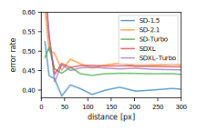
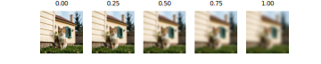
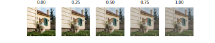
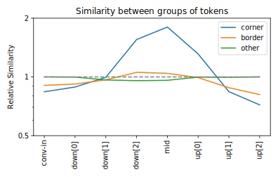

An analysis of representation similarities in latent diffusion models and implications for representation extraction
Master’s Thesis
Abstract
Diffusion models have become a cornerstone of generative modeling, achieving state-of-the-art performance in producing high-quality outputs across diverse modalities, especially in image generation. Beyond their generative capabilities, these models encode meaningful semantic representations that can facilitate various downstream tasks, such as classification, semantic correspondence, and depth estimation. This thesis investigates the properties of diffusion model representations and their similarities, revealing biases that include sensitivity to absolute image positions, prioritization of texture and color over semantic content, and anomalies with high representation norms. By evaluating the representations on downstream tasks, we quantify the impact of these biases and their implications for representation quality. Our findings provide new insights and guidelines for leveraging latent diffusion models as representation learners in computer vision.
Definitions and Abbreviations
Important Definitions
- Stable Diffusion (SD): a series of open-source latent diffusion models for image generation [1]
- U-Net: a U-shaped neural network using an encoder-decoder architecture with skip connections [2]
- Block: one submodule of the SD U-Net, e.g.
mid, orup[1]; can also refer to the output of a block - Upper/Lower Blocks: the blocks that are higher in the U-Net, i.e. closer to input/output (
conv-in,down[0],up[3], …), or lower, i.e. near the center (down[3],mid,up[0], …); the transition is gradual, i.e. there is no sharp separation - Layer: a part of a block, e.g. the
midblock of SD-1.5 has the one attention layer and two ResNet layers; can also refer to the output of a layer - Representation: the output of a block/layer, with shape (channels, height, width), e.g. (1280, 8, 8) for SD-1.5
midblock at the default image size; also called “feature map” in the literature [3, 4] - (Representation) Token: a vector containing the channels values of a representation at a specific spatial position
- Colorwheel: an image containing a cyclic color gradient with the goal of better visualizing which regions of an image are mapped where
Common Abbreviations
- SD: Stable Diffusion
- VAE: Variational Autoencoder
- PCK: Percentage of Correct Keypoints
- PCK@0.1\(_{\text{bbox}}\): PCK at a threshold of 10% of the bounding box size
- MSE: Mean Squared Error
- RMSE: Root Mean Square Error
- RGB: Red Green Blue (image color channels)
- AI: Artificial Intelligence
Introduction
Diffusion models [5, 6] have rapidly advanced the field of generative modeling, achieving state-of-the-art sample quality and training stability across various modalities, such as images [7], video [8], and audio [9], but can also be used in other contexts like text or code generation [10]. Especially in the field of image generation, diffusion models are currently state-of-the-art [1, 7, 11, 12, 13, 14], which raises the question, if they also learn semantic representations of various concepts present in the training images. If yes, these representations could be used for various tasks in computer vision, such as semantic correspondence, semantic segmentation, depth estimation, and more. In this thesis, we set out to investigate the properties of the learned representations of diffusion models, the similarities between them, and their usefulness for downstream tasks.
Many tasks in computer vision would greatly benefit from meaningful representations that effectively capture the semantic information of input data, however, the task of learning such representations remains a key challenge in the field. There are different approaches to learning these meaningful representations of images, such as self-supervised learning with self-distillation in the case of the DINOv2 model [15], or contrastive learning in the case of CLIP models [16]. Other options include using internal representations of vision models trained on other tasks, such as image classification models or diffusion models for image generation.
For these diffusion models, proprietary implementations lead the leaderboard in terms of image generation quality, but there are also multiple open-source diffusion models in the top 10 [17]. The most prominent series of open-source diffusion models for image generation is Stable Diffusion (SD), introduced by [1]. SD models sample images by iteratively transforming noise towards the target image distribution in the latent space of a pre-trained autoencoder. This transformation is achieved by removing noise using a U-Net [2] architecture, which is a U-shaped neural network.1
SD already received broad attention as foundation models providing representations that can be used for various tasks. Several works use SD U-Net representations for tasks such as semantic correspondence [3, 4, 18, 19, 20, 21, 22, 23, 24, 25, 26], classification [23, 27, 28, 29, 30, 31], depth estimation [23, 32, 33, 34, 35], semantic segmentation [34, 35, 36, 37, 38, 39, 40, 41], robot control [42, 43, 44], and more [45, 46]. However, comprehensive studies exploring the properties, visual biases, and anomalies of diffusion models remain scarce [3, 47, 48], leaving significant gaps in the understanding of SD representations.
These representations are typically extracted from different parts of the U-Net, whereby the quality and usefulness of the representations heavily depends on the details of the representation extraction process [3, 49]. The shape of the representations is dependent on the position in the U-Net, and consists of spatial dimensions that are relative to the size of the input image, downscaled by a power of two, and a channel dimension. We can compare the feature vectors at specific spatial positions, i.e. the different representation tokens, and analyze the similarities between them. The resulting similarity maps ideally show the semantic relationships between the different parts of the image and can be used for downstream tasks such as semantic correspondence.
In this thesis, we investigate the properties of the learned representations of SD, their similarities, and their usefulness for downstream tasks2. A significant part is dedicated to investigating different biases, such as position bias, texture and color bias, and anomalous tokens with high norm in the learned representations. For this, we introduce novel approaches to demonstrate and quantify these biases. Our experiments often build upon the similarities between representations, but also include investigations of the representation norms and downstream tasks utilizing linear probes. The results tend to follow the structure of first observing and qualitatively studying a found property, followed by a quantitative analysis and an investigation of the impact on downstream tasks.
The main contributions of this thesis, sorted by relevance, are:
- An extensive investigation of different biases in the learned representations, including position bias, texture and color bias, and anomalies in the learned representations. To the best of our knowledge, this is the first work to systematically study the position bias and describe the high-norm anomalies occurring in the SD representations.
- A detailed evaluation of the performance of the learned SD representations on the tasks of linear probe classification and semantic correspondence.
- The development of representation extraction and exploration tools3 to facilitate our analyses.
The general structure of this thesis is as follows: After introducing relevant concepts and existing methods in Section 1.1, we start by describing our approach to representation extraction, and the different tasks and datasets used in the experiments, in Section 2. We then detail our tools and results for representation extraction and exploration in Section 3. Next, we evaluate the performance of the learned SD representations on the tasks of linear probe classification and semantic correspondence, in Section 4. Following this, we investigate the different biases qualitatively and quantitatively in Section 5. Finally, we discuss our results, the limitations, and future work in Section 6 and present final conclusions in Section 7. The appendix contains supplementary information about experiment setup, models, and additional results.
Methods
In this thesis, we primarily extract representations from SD-1.5, partly complemented by SD-2.1, SD-Turbo, SDXL, and SDXL-Turbo to show the generalizability of our findings. The extracted representations consist of representation tokens over the different spatial positions, over which different similarity measures can be evaluated. We use either these similarities or linear probes as a base for downstream tasks on various datasets. The downstream tasks we use to assess the performance of the SD models are linear probe classification, semantic correspondence, dense correspondence, and depth estimation. In the following, we first describe diffusion models, representation extraction, and representation similarities. Subsequently, we detail the downstream tasks and datasets used in this thesis.
Diffusion Models
Diffusion models define a generative process that transforms noise into complex samples, in our case images, by reversing a predefined forward diffusion process. Following the DDPM formulation by [6], let \(\mathbf{x}_0 \in \mathbb{R}^d\) be an input image. The forward process transforms \(\mathbf{x}_0\) into a noisy version \(\mathbf{x}_t\) at step \(t\) through linear interpolation with Gaussian noise:
\[\mathbf{x}_t = \sqrt{\bar{\alpha}_t}\,\mathbf{x}_0 + \sqrt{1-\bar{\alpha}_t}\,\boldsymbol{\epsilon},\]
with \(\boldsymbol{\epsilon}\sim \mathcal{N}(0,\mathbf{I})\) and \(\bar{\alpha}_t=\prod_{s=1}^t \alpha_s\), given a noise schedule \(\{\alpha_t\}_{t=1}^T\) where \(0<\alpha_t<1\). As \(t \to T\), \(\mathbf{x}_t\) approaches pure noise.
The goal is to approximate the reverse process that removes noise step-by-step:
\[p_\theta(\mathbf{x}_{t-1} \mid \mathbf{x}_t) \approx q(\mathbf{x}_{t-1} \mid \mathbf{x}_t,\mathbf{x}_0),\]
where \(q\) denotes the true (but intractable) reverse distribution that is approximated by the parameterized Gaussian distribution \(p_\theta\), with \(\theta\) being the model weights. To achieve this, a model \(\boldsymbol{\epsilon}_\theta(\mathbf{x}_t,t)\) is trained to predict the noise \(\boldsymbol{\epsilon}\) present at each step, from which the mean of \(p_\theta(\mathbf{x}_{t-1} \mid \mathbf{x}_t)\) can be derived. A common training objective is to minimize the mean squared error between the predicted and true noise:
\[\mathcal{L}(\theta) = \mathbb{E}_{\mathbf{x}_0,\boldsymbol{\epsilon},t}\bigl[\|\boldsymbol{\epsilon}-\boldsymbol{\epsilon}_\theta(\mathbf{x}_t,t)\|^2\bigr],\]
where \(\mathbf{x}_0\) is sampled from the training data distribution, \(t\) is typically chosen uniformly at random from \(\{1,\dots,T\}\), and \(\boldsymbol{\epsilon}\) is drawn from a standard normal distribution \(\mathcal{N}(0,\mathbf{I})\). Given these samples, we form the noisy image \(\mathbf{x}_t\) using the forward process. After training, new samples are generated by starting from pure noise \(\mathbf{x}_T \sim \mathcal{N}(0,\mathbf{I})\) and iteratively applying the learned reverse transitions until \(\mathbf{x}_0\) is obtained.
In the case of SD, the denoising model \(\boldsymbol{\epsilon}_\theta\) is typically a U-Net [1, 2]. As SD is a series of latent diffusion models, the generative process is not applied in pixel space, but rather in the latent space of a pretrained variational autoencoder (VAE) [1]. This means that \(x_0\) is the output of the VAE encoder.
Representation Extraction
For our analyses, we primarily focus on SD-1.5, partly complemented by SD-2.1, SD-Turbo, SDXL, or/and SDXL-Turbo. This decision is led by the popularity of SD-1.5 and that running all models for all experiments would be computationally expensive. If not stated otherwise, results are for SD-1.5.
The SD U-Net, visualized in Figure 1, consists of a series of down- and up-blocks, which are connected by skip connections and a mid block at the lowest level. Each block consists of a combination of ResNet and attention layers, and a final down- or up-sampling operation where applicable. The output of these blocks are the representations we use. They have shape \((w, h, c) \in \mathbb{N}^3\), with \(w\) and \(h\) being width and height, and \(c\) being the number of channels. One can also extract the representations from the different layers in the blocks, however, we primarily focus on the block outputs. The number of spatial dimensions and channels depends on the input image size and the block, as described in Table 1. We refer to the representation at a given spatial position as a token, with shape \((c)\).
Input in the table. SDXL and SDXL-Turbo only have 3 down and up blocks.
| Block | SD-1.5 | SD-2.1 | SD-Turbo | SDXL | SDXL-Turbo |
|---|---|---|---|---|---|
Input |
512, 512, 3 | 768, 768, 3 | 512, 512, 3 | 1024, 1024, 3 | 512, 512, 3 |
conv-in |
64, 64, 320 | 96, 96, 320 | 64, 64, 320 | 128, 128, 320 | 64, 64, 320 |
down[0] |
32, 32, 320 | 48, 48, 320 | 32, 32, 320 | 64, 64, 320 | 32, 32, 320 |
down[1] |
16, 16, 640 | 24, 24, 640 | 16, 16, 640 | 32, 32, 640 | 16, 16, 640 |
down[2] |
8, 8, 1280 | 12, 12, 1280 | 8, 8, 1280 | 32, 32, 1280 | 16, 16, 1280 |
down[3] |
8, 8, 1280 | 12, 12, 1280 | 8, 8, 1280 | - | - |
mid |
8, 8, 1280 | 12, 12, 1280 | 8, 8, 1280 | 32, 32, 1280 | 16, 16, 1280 |
up[0] |
16, 16, 1280 | 24, 24, 1280 | 16, 16, 1280 | 64, 64, 1280 | 32, 32, 1280 |
up[1] |
32, 32, 1280 | 48, 48, 1280 | 32, 32, 1280 | 128, 128, 640 | 64, 64, 640 |
up[2] |
64, 64, 640 | 96, 96, 640 | 64, 64, 640 | 128, 128, 320 | 64, 64, 320 |
up[3] |
64, 64, 320 | 96, 96, 320 | 64, 64, 320 | - | - |
conv-out |
64, 64, 4 | 96, 96, 4 | 64, 64, 4 | 4, 128, 128 | 4, 64, 64 |
The SD U-Net can be broadly categorized into upper blocks (conv-in, down[0], down[1], up[2], up[3]), and lower blocks (down[2], down[3], mid, up[0], up[1]). While upper and lower blocks tend to have different properties and biases, the distinction is usually not clear-cut, but rather a continuum. The output of conv-out is not used for any downstream tasks, as it does not directly contain semantic information, but rather the noise prediction. We therefore exclude it from most of our experiments.
As indicated in Figure 1, to extract representations of a given image, the image is first fed through the encoder of the VAE. Then, Gaussian noise is added according to a given time step for the noise-scheduler, ranging between 0 and 1000 for SD, with higher values indicating more noise, as visualized in Figure 2. Finally, it is fed into the U-Net, and the representations are extracted from the desired blocks. For example, an image of shape \((512, 512, 3)\) fed into SD-1.5 has shape \((64, 64, 4)\) in the latent space of the VAE, and shape \((8, 8, 1280)\) at the mid block.
As this thesis focuses on the representations, when referring to a U-Net block, we are not talking about the block itself, i.e. its architecture or parameters, but rather about the representations extracted from it.
The amount of noise added to the latent image is a hotly debated topic in the literature. As described in Section 1.1, time steps \(t\) between \(0\) and \(500\) are used, with common values ranging between \(50\) and \(100\). For our experiments presented in Section 4, we find time step \(t=50\) to be a good choice. However, slightly lower or moderately higher values tend to yield similar results. Unless stated otherwise, we use time step 50 as default for all our experiments.
Representation Similarities
As described in Section 2.2, SD representations have shape \((w, h, c)\). Representation tokens, i.e. the channel vectors at given spatial positions, correspond semantically to the image content at the corresponding position in the image. This property is widely described in the literature, as detailed in Section 1.1, and visualized in Section 3.3. It is the basis for using similarities between tokens as a measure of semantic similarity between image regions.
Following common practice [23, 91, 92], we use cosine similarity to measure the similarity between the representation tokens, which is defined as
\[ \text{cosine similarity}(R_{x,y}, R'_{x',y'}) = \frac{R_{x,y} \cdot R'_{x',y'}}{||R_{x,y}|| \cdot ||R'_{x',y'}||} \]
where \(R\) and \(R'\) are the two representations of the same block, but potentially of different images. \(R_{x,y}\) is the token at spatial position \((x, y) \in \{1,...,w\}\times\{1,...,h\}\) of representation \(R\).
Instead of cosine similarity, also other similarity measures or distance metrics can be used. Options include cosine similarity without normalization, i.e. the dot product, or cosine similarity with centering the representations first, i.e. subtracting the mean of each representation. When using distance metrics, their results need to be inverted to be used as a similarity measure, so that higher values indicate higher similarity. Common distance metrics are the Euclidean distance (\(L_2\)), the Manhattan distance (\(L_1\)), the Chebyshev distance (\(L_\infty\)), or more generally the distance metrics given by the \(L_p\) norm, defined as
\[ L_p(R_{x,y}, R'_{x',y'}) = \left| \sum_{i=1}^c (R_{x,y,i} - R'_{x',y',i})^p \right|^\frac{1}{p} \]
where \(p \in [1, \infty)\) is the order of the norm.
Instead of calculating the similarity between the tokens of one representation, one can also concatenate multiple representations along the channel dimension. If the spatial representations shapes differ, we use nearest neighbor upsampling on the smaller representations. For this, tokens are duplicated until the representation shapes match. While this approach can combine the semantic information of the different representations, the resulting representations are often very large, which can be a disadvantage in resource-constrained environments.
Measuring the similarity between the representation tokens is the basis for several downstream tasks. In this thesis, we use cosine similarity as a basis for semantic correspondence and dense correspondence tasks, as described in Section 2.4.
Downstream Tasks
To evaluate the quality and properties of the extracted representations, we use several downstream tasks. These tasks either work on the similarity maps between representations, this includes semantic and dense correspondence, or using a linear probe on the representations, which is the case for classification and depth estimation.
Linear Probe Classification
A conceptually simple way to evaluate the extracted representations from the U-Net of diffusion models, is the usage of a linear probe classifier [27, 30, 31]. The key idea is to assess how well the representations encode semantic information, while keeping the classifier architecture minimal to focus on the quality of the representations themselves.
We use the datasets CIFAR-10 [83] with 10 classes, CIFAR-100 [83] with 100 classes, and Tiny- Imagenet [84] with 200 classes. We upscale images to 512 px and extract representations from a given block of the U-Net. As the representations have both spatial and channel dimensions, we average over the spatial dimensions to obtain a single feature vector per image [27, 72].
We then train a linear layer that maps from these averaged representations to class probabilities. For training, we use cross-entropy loss and the Adam optimizer [93]. The linear layer consists of a weight matrix \(W\) and bias vector \(b\), with the number of output neurons matching the number of classes in the dataset. The class prediction \(\hat{y}\) for a representation \(R\) is defined as follows:
\[ \hat{y} = \underset{i}{\text{argmax}} \left( \left( \frac{1}{w \cdot h} \sum_{x,y} R_{x,y} \right) \cdot W + b \right)_i \]
The advantage of a linear probe lies in its limited complexity - it can only learn linear combinations of the input features. This restriction means that if the classifier achieves good performance, the original representations must already encode the relevant semantic information in a linearly separable way. Conversely, if a linear classifier struggles despite sufficient training data, this suggests that the probed class concepts are either not well captured or are encoded in a way that requires more complex transformations to be useful for classification.
Semantic Correspondence
Semantic correspondence is the task of finding the corresponding keypoint in a target image for a given keypoint in a source image. For example, the left ear of a cat in a source image should be matched to the left ear of a cat in a target image. This task requires a semantic understanding of image content and object positions. We primarily use SPair-71k [90] in our experiments, one of the most commonly used datasets for semantic correspondence.
To find corresponding points between two images, we first extract representations from both images at a specific block of the U-Net. For each source keypoint \((x_\text{src}, y_\text{src}) \in \{1,...,w\}\times\{1,...,h\}\) in the source image’s representation \(R_\text{src} \in \mathbb{R}^{w \times h \times c}\), we then compute the cosine similarity with all spatial positions in the target image’s representation \(R_\text{trg} \in \mathbb{R}^{w \times h \times c}\). The position with the highest similarity score is predicted as the corresponding point \((\hat{x}_\text{trg}, \hat{y}_\text{trg}) \in \{1,...,w\}\times\{1,...,h\}\).
\[ (\hat{x}_\text{trg}, \hat{y}_\text{trg}) = \underset{(x, y)}{\text{argmax}}\ \frac{R_{\text{src},x_\text{src}, y_\text{src}} \cdot R_{\text{trg}, x, y}}{ ||R_{\text{src},x_\text{src}, y_\text{src}}|| \cdot ||R_{\text{trg}, x, y}|| } \]
As we only use argmax on the cosine similarity of the representations to determine the correspondences, the method can be considered unsupervised and zero-shot.
The performance in the semantic correspondence task is usually reported in terms of the percentage of correct keypoints (PCK). PCK measures the percentage of predicted keypoints \((\hat{x}_\text{trg}, \hat{y}_\text{trg})\) with a distance to the target keypoints \((x_\text{trg}, y_\text{trg}) \in \mathbb{R}^{w \times h}\) below a certain fraction \(\alpha\) of the bounding box size \((w_\text{bbox}, h_\text{bbox}) \in \{1,...,w\}\times\{1,...,h\}\) of the objects (PCK@\(\alpha_\text{bbox}\)), typically with \(\alpha=0.1\) [3, 4, 18, 20, 21, 22]. Instead of the bounding box size, some works also report the PCK for a fraction of the image size (PCK@\(\alpha_\text{img}\)) [20, 22, 23].
\[ \text{PCK@}\alpha_\text{bbox} = \frac{1}{n} \sum_{i=1}^n \mathbb{1}\left( \left( (x_\text{trg} - \hat{x}_\text{trg})^2 + (y_\text{trg} - \hat{y}_\text{trg})^2 \right)^\frac{1}{2} \leq \alpha\cdot\text{max}(w_\text{bbox}, h_\text{bbox})\right) \]
We report PCK@0.1\(_\text{bbox}\) for all our semantic correspondence experiments.
Note that in practice, the source and target images might have different sizes, and that the keypoints and bounding box sizes are given in pixels, which necessitates conversion between the pixel and representation space. This is achieved by linear scaling according to the ratio between the image and representation size.
Dense Correspondence
In dense correspondence, the task is to match not only specific keypoints, but rather larger regions or even the full content between two images. It can be considered a special case of semantic correspondence, where the keypoints are at every token position. Its applications are, for example, object tracking in videos and estimation of optical flow [4, 94]. We use the dense correspondence task to evaluate failures and biases in the representations, see Section 5. Due to the dense matching, inconsistencies in the representations can be better visualized.
The correspondences are found using the same approach as for semantic correspondence, but instead of PCK, we use accuracy as performance metric, i.e. the percentage of correct correspondences. This setup is equivalent to semantic correspondence with keypoints at every token position and PCK@0.
Depth Estimation
Monocular depth estimation is the task of predicting depth values for each pixel in a single RGB image. This is a challenging task as it requires understanding the 3D structure of a scene from a single 2D view. The task has applications for example in robotics and scene understanding [89].
We use the NYU Depth v2 dataset [89] to evaluate the depth estimation capabilities of SD representations. Following [32], we train a simple linear probe on the representations to predict depth values. The linear probe maps from the representation channels to a single depth value for each spatial position. This allows us to assess how well depth information is encoded in different blocks of the model while keeping the probe’s complexity minimal.
We train the linear probe using the Huber loss, following [32], with threshold \(\delta = 1\), also known as SmoothL1loss [95]. The Huber loss is defined as
\[ \mathcal{L}_i = \begin{cases} 0.5\cdot(d_i - \hat{d}_i)^2, & \text{if } |d_i - \hat{d}_i| < \delta \\ \delta \cdot (|d_i - \hat{d}_i| - 0.5 \cdot \delta), & \text{otherwise} \end{cases} \]
where \(d_i\) is the ground truth depth and \(\hat{d}_i\) is the predicted depth at pixel \(i\).
To align with common practice in the depth estimation literature, we evaluate the performance using root mean squared error (RMSE) [23, 32, 33]. Lower RMSE values indicate better depth predictions:
\[ \text{RMSE} = \sqrt{\frac{1}{n} \sum_{i=1}^n (d_i - \hat{d}_i)^2} \]
Datasets
For evaluating the representations and their similarities, we use multiple different datasets, depending on the task:
- classification: CIFAR, Imagenet
- semantic correspondence: SPair-71k
- depth estimation: NYU Depth v2
- anomaly evaluation: ImageNet Subset, NYU Depth v2
For some tasks we also use task specific (synthetic) datasets, which are further described in the respective sections.
CIFAR
We utilize the CIFAR-10 and CIFAR-100 datasets by [83] for linear probe classification (see Section 4.1). The datasets contain 60,000 images (50,000 training, 10,000 test) of size \(32\times32\) pixels with 10 and 100 classes respectively. We use the versions hosted on Hugging Face7 8.
Imagenet
ImageNet by [84] is a large-scale image recognition dataset. A common variant is the imagenet-1k (ILSVRC) 2012 version hosted on Hugging Face9. It consists of 1000 classes and contains 1,281,167 training, 50,000 validation and 100,000 test images, which differ in resolution and aspect ratio.
Due to the large size of the dataset, we run our experiments on a smaller variant, Tiny ImageNet10, which contains 200 classes and 100,000 images of size \(64\times64\) pixels. Each class has 500 images for training, 50 for validation, and 50 for testing.
For some tasks, we also utilize a custom subset of ImageNet, as described below, with fewer but larger images, compared to Tiny ImageNet.
ImageNet Subset
For several of our statistical analyses of the SD representations, we use a small subset of ImageNet [84] (imagenet-1k variant from Hugging Face), containing 500 images of 5 different classes, i.e. 100 images per class. The images are center-cropped and resized to \(512\times512\) pixels. The size of the dataset is a trade-off between statistical significance and the computational complexity of running state-of-the-art diffusion models.
The original ImageNet ids and class names used in the subset are:
- 235: German shepherd, German shepherd dog, German police dog, alsatian
- 242: boxer
- 282: tiger cat
- 717: pickup, pickup truck
- 980: volcano
SPair-71k
The SPair-71k dataset by [90] is a large-scale benchmark for evaluating semantic correspondence algorithms. It contains nearly 71,000 image pairs annotated with semantically meaningful correspondences and covers diverse categories, varying object scales and challenging viewpoint variations. The dataset is widely used for advancing research in visual correspondence and matching tasks.
For better usability, we created and published a dataset loading script that can be used with the Hugging Face datasets library11.
While working with the SPair-71k dataset, we found that the keypoints usually relate to a specific position on an object, but sometimes they are ambiguous. For example, for a keypoint on a rotational symmetric flowerpot, the semantically correct target position on a second flowerpot object is ambiguous. This effect could cause semantically correct predictions to be rejected. However, as this problem is model independent, we consider the impact to be negligible for our purposes of comparing models and representations.
NYU Depth v2
The NYU Depth v2 dataset contains RGB and depth images of indoor scenes and was introduced by [89]. It contains 1449 densely labeled and curated pairs of RGB and depth images. There is also a larger variant with unlabeled pairs, however, we only use the densely labeled and curated pairs. The images were recorded using Microsoft Kinect cameras in different locations and cities. Similar as for the SPair-71k dataset, we created and published a dataset loading script that can be used with the Hugging Face datasets library12.
Representation Extraction and Exploration
A significant part of the work for this thesis was dedicated to the exploration of the extracted representations, and the engineering work of developing and optimizing the representation extraction and exploration tools. Both the exploration and the tools provide the basis and inspiration for the analyses and results we present in Section 4 and Section 5. This chapter describes the sdhelper package, which provides a unified interface to extract representations from different SD models, and the Representation Similarity Explorer, which allows for interactive exploration of the extracted representations. Finally, we present results and insights of the exploration of the representation similarities, which lay the foundation for the following chapters.
sdhelper Package
We developed and published the sdhelper Python package to simplify representation extraction and analysis, offering a unified interface for various SD models13. In the background, it uses the Hugging Face diffusers library [57] and SD text-to-image pipeline, which provides a flexible interface for interacting with intermediate outputs [58]. Representations can be extracted either during image generation from noise or for existing images. We use the sdhelper package as a basis for most of our experiments on the representations.
When initializing an SD object with a model name, the sdhelper package loads the corresponding model from Hugging Face or the local cache. The SD object then allows to generate images, extract representations for existing images, and access model properties. The library also simplifies further processing of the representations, including the computation of similarities.
Example usage:
from sdhelper import SD
# load model
sd = SD('SD-1.5')
# generate image
img = sd('a beautiful landscape').result_image
# extract representations from the `up[1]` block at time step 50
r = sd.img2repr(img, extract_positions=['up_blocks[1]'], step=50)
# compute similarity between all pairs of tokens in `r`
similarities = r.cosine_similarity(r)Representation Similarity Explorer
To better understand the properties of the extracted representations and the similarities between their tokens, we developed the Representation Similarity Explorer. It is a tool allowing to interactively visualize the similarities between the tokens of different blocks and spatial positions for different images and models. For a screenshot of the tool, see Figure 3. We provide a public web version at sd-similarities.jloos.de that includes precomputed representations for given images. For the upload and exploration of arbitrary images, running the tool locally is required14.
To use the tool for representation similarity analysis, open the link in a browser and select one or more images to analyze. Now, hover over the images or similarity maps to show the similarities to the token at the current cursor position. For a good first example of interesting semantic correspondences, select two images that contain a human or animal and hover over the position of an eye. For further exploration change the SD model, the block (position), the similarity measure, and the noise level.
The tool allows for uncomplicated exploration of the representation similarities and properties, which helps us to identify interesting patterns and directions for further analyses. For example, many of the biases described in Section 5 were discovered using it. Available options include:
- custom image upload (locally)
- various SD models
- all blocks of the selected SD model
- various similarity measures, including cosine similarity and \(L_p\) norms
- different noise levels (time steps)
Architecturally, the representation similarity explorer is split into a Flask-based backend that computes the representations for uploaded images using the sdhelper package (see Section 3.1) and a simple frontend built with HTML, CSS, and JavaScript. To improve the performance and interactivity, we developed an asynchronous webworker in Rust, that computes the shown similarities in the browser in real time.
[20] provide a similar interactive demo, in the form of a Jupyter notebook, to showcase their semantic correspondence results. Compared to their demo, our tool is significantly more responsive and provides additional options for exploring the representation similarities.
Similarity Exploration
up[1] representations of SD-1.5: K-means clustering with 6 clusters, L2 norms, and the first 3 principal components (PCs) as color channels.
Using the representation similarity explorer and sdhelper package, we explore the similarities between the representations of various images for the different SD models. The goal is to qualitatively compare the similarity behavior of the representations with our intuitions and expectations to find unexpected behavior and further investigate known properties.
Cosine Similarity Maps. As can be seen in Figure 4, the cosine similarity between representation tokens highlights semantic correspondences, in this case especially between the tokens at the positions of the eyes of the animals. Notably, this similarity is not only meaningful within the same image, but also across different images. These semantic similarities can be observed across all tested models, but some differences are visible. The representations used in Figure 4 are the output of the blocks that do not only look the most semantically meaningful, but which also perform best in semantic correspondence, as will be described in Section 4.2. In Figure 5, we visualize the similarities over the different blocks of the SD-1.5 U-Net. The upper U-Net blocks (conv-in, down[0], up[3]) are relatively noisy, and conv-out does not appear to be useful for representation extraction. Some lower blocks (down[2], down[3], mid) have such a low spatial resolution that the image content is not well recognizable in their similarity maps. Their cross-image similarities, however, appear to be meaningful. In the remaining similarity maps, the semantic content and correspondence to the reference token is visible. Thereby, the up[1] representations look particularly relevant, due to their good semantic similarities at a resolution that is high enough to recognize the image content.
Alternative Visualizations. Figure 6 visualizes the spatial correspondences of the representations using k-means clustering, norms, and principal component analysis. Similar to the cosine similarity maps from Figure 4, the content of the image is reflected in the visualizations. They show that the representations contain spatially accurate and semantically meaningful information, that can be visualized in different ways. For example, both k-means clustering and the principal components separate between foreground and background. For the L2 norm map, the separation is less clear, but some structure is still visible, and the highest norm is at the position of the cat’s face, which might be considered as the most important part of the image. While this observation is very subjective, we find it to be a tendency which is relatively consistent across different images for SD-1.5, SD-2.1, and SD-Turbo. Additional visualizations of the representation norms can be found in Section 9.6.
Overall, all tested models show semantically meaningful cosine similarity maps, but the meaningfulness highly depends on the block. Not only cosine similarity shows that the representations contain information about the image content, but so do different visualization methods, such as k-means clustering, L2 norm, and principal components. Following these qualitative observations, we will present more quantitative results in the following chapters.
Performance Evaluation on Downstream Tasks
To evaluate the quality of the representations for downstream tasks, we use linear probe classification (see Section 2.4.1) and semantic correspondence (see Section 2.4.2) on the datasets described in Section 2.5. Liner probe classification is good for assessing the overall quality of the representations due to the spatial averaging. Semantic correspondence supplements this, as it additionally relies on accurate spatial correspondence between the representations and the image.
Linear Probe Classification
down[3] and up[3] blocks.
| SD-1.5 | SD-2.1 | SD-Turbo | SDXL | SDXL-Turbo | |||||||||||
| C10 | C100 | T-IN | C10 | C100 | T-IN | C10 | C100 | T-IN | C10 | C100 | T-IN | C10 | C100 | T-IN | |
| conv-in | .29 | .08 | .05 | .29 | .08 | .04 | .29 | .08 | .05 | .29 | .08 | .05 | .29 | .07 | .05 |
| down[0] | .58 | .31 | .24 | .58 | .32 | .25 | .57 | .32 | .25 | .45 | .19 | .15 | .44 | .19 | .15 |
| down[1] | .65 | .39 | .29 | .65 | .39 | .28 | .67 | .40 | .31 | .53 | .24 | .19 | .54 | .26 | .20 |
| down[2] | .76 | .49 | .34 | .76 | .50 | .32 | .81 | .55 | .38 | .79 | .53 | .43 | .82 | .57 | .47 |
| down[3] | .78 | .52 | .36 | .75 | .48 | .30 | .80 | .54 | .37 | - | - | - | - | - | - |
| mid | .83 | .57 | .38 | .73 | .45 | .28 | .80 | .53 | .35 | .79 | .52 | .41 | .83 | .56 | .47 |
| up[0] | .80 | .51 | .35 | .70 | .40 | .24 | .80 | .55 | .38 | .69 | .38 | .28 | .78 | .48 | .38 |
| up[1] | .78 | .51 | .33 | .75 | .49 | .31 | .81 | .56 | .40 | .57 | .29 | .22 | .64 | .35 | .27 |
| up[2] | .68 | .40 | .27 | .66 | .39 | .27 | .72 | .43 | .31 | .46 | .22 | .16 | .49 | .22 | .17 |
| up[3] | .56 | .29 | .21 | .49 | .22 | .16 | .60 | .32 | .24 | - | - | - | - | - | - |
| conv-out | .11 | .01 | .01 | .23 | .05 | .03 | .19 | .02 | .01 | .13 | .02 | .01 | .19 | .04 | .02 |
Table 2 presents linear probe classification results for CIFAR-10, CIFAR-100, and Tiny- Imagenet. These results are for time step 50, which we found to perform the best for linear probe classification. They show that the representations contain information useful for classification that is usable by a simple linear probe. However, the results are far from perfect, with a maximum accuracy for SD-1.5 of 83% on CIFAR-10, 57% on CIFAR-100, and 38% on Tiny- Imagenet. Other SD models achieve similar results. The lower blocks in the U-Net, in the center rows of Table 2, tend to achieve higher results than the upper blocks. Interestingly, which block achieves the highest results differs between the models. In the case of SD-1.5, the mid block achieves the highest results, while for SD-2.1, down[2], down[3], and up[1] achieve the best results. In SD-Turbo, all lower blocks from down[2] to up[1] perform similarly good. For SDXL, and SDXL-Turbo, down[2] and mid are the best suited blocks. Notably, there is no clear pattern favoring either down or up blocks, suggesting a more nuanced picture of the semantic information distribution across blocks. Interestingly, the results of the distilled models [51], SD-Turbo and SDXL-Turbo, are slightly better than the results of their non-distilled counterparts, SD-2.1 and SDXL, respectively.
We can conclude from these results that the lower blocks in the U-Net contain more high level information useful for classification and that the different models only differ slightly in their performance.
Compared to supervised methods [96], our results are relatively low. Potential reasons for the suboptimal performance could be the spatial averaging of the representations, which merges foreground and background tokens without distinction. For example, if an image contains more background than foreground, the averaged representation will likely be more biased towards the background. Additionally, the possibly non-linear nature of the learned features might also play a role. [30] indeed find that more complex mappings from the representations to the labels, e.g. CNN- or attention-based, can improve the performance significantly.
Another possible problem with the used datasets is the low resolution of the images. They are resized from 32 in the case of CIFAR and 64 in the case of Tiny- Imagenet to a resolution of 512 pixels. The resulting blurring is likely out of distribution compared to the training data of the models. In fact, as discussed in Section 5.2 and visualized in Figure 34, blurring the input images can lead to a significant decrease in performance.
Semantic Correspondence
As described in Section 2.4.2, we evaluate the performance of the representations for unsupervised zero-shot semantic correspondence on the SPair-71k dataset.
We evaluate the performance of the representations over different blocks and time steps, as shown in Figure 7. SD-1.5, SD-2.1, and SD-Turbo achieve their best performance with the up[1] block, while SDXL and SDXL-Turbo achieve their best performance with the up[0] block, which are therefore the blocks we will focus on. Due to the differences in model architecture, these blocks have actually the same depth in the U-Net and the same spatial resolution for images of the same size. The optimal time step (noise level) differs between models, but values between 25 and 100 achieve near optimal performance for all models. This observation motivates our choice of time step 50 as default for our experiments. Higher input image resolutions can lead to higher PCK values, as shown in Figure 8. For SDXL, higher resolutions visibly increase performance at least up to 1024 (in pixels) for the best block (up[0]). Among all other tested models, the optimal resolution is 768, however, for SD1.5, SD-Turbo and SDXL-Turbo, the difference to 512 is only around 2 PCK. A resolution of 1024 even leads to a decrease in performance compared to 768. As computational requirements increase quadratically with the resolution, we mostly use 512 for our experiments.
The different models achieve PCK@0.1\(_\text{bbox}\) values of up to 48.89 for SD-1.5, 52.38 for SD-2.1, 54.80 for SD-Turbo, 39.80 for SDXL, and 40.95 for SDXL-Turbo, at our default time step 50 and using an image resolution of 768. These values are similar to the results of [3], who use a similar method and report 52.8 PCK@0.1\(_\text{bbox}\) for SD-2.1.
To be able to estimate if representations are semantically meaningful at all, we compute the PCK for a random and a same-position estimator, see Figure 9. If representations yield semantic correspondence results at a similar level as these trivial baselines, they are not semantically meaningful in this context. The random estimator randomly guesses a predicted keypoint with uniform distribution over the input image size. It correctly predicts 2.02% of the keypoints correctly at \(\alpha_\text{bbox}=0.1\), which can be considered the lowest baseline above which a semantic correspondence algorithm should perform. The same-position estimator always assumes that the target keypoint is the same as the source keypoint and correctly predicts 5.49% of the keypoints at \(\alpha_\text{bbox}=0.1\). This means that estimators should reach a PCK@\(0.1_\text{bbox}\) of more than 5.49% to be considered potentially meaningful for semantic correspondence on the SPair-71k dataset. This value is what we find most blocks to converge to for very high noise levels (high time steps), see Figure 7. Especially some upper blocks (conv-in, down[0], up[3], and conv-out) are so close to these baselines, that they can be considered unsuitable for semantic correspondence.
Interestingly, we find that the maximum semantic correspondence performance of the different models does not directly correspond to the image generation quality of the models. For example, images generated by SDXL are usually of higher quality than images generated by SD-1.5 or SD-2.1 [12], but the semantic correspondence performance of SDXL is significantly lower. Similarly, the performances of the distilled models, SD-Turbo and SDXL-Turbo, are higher than that of their non-Turbo counterparts, SD-2.1 and SDXL, respectively, even though their image quality is lower in general [51]. This aligns with the equivalent findings for linear probe classification in Section 4.1. These observations seem to contradict the intuition that models with higher image quality might also have better representation quality. This might be due to architectural differences between the models, or due to improvements of non-semantic properties, such as texture and style. We leave a more detailed analysis of the relationship between image quality, model architecture, and representation quality for future work.
Overall, our results show that SD representations can be usable for semantic correspondence, which aligns with the results of related work [3, 4]. The performance depends on the model, block, resolution, and time step. Using suboptimal settings can easily degrade the performance to the level of a trivial baseline (see Figure 7 and Figure 9).
Improvements for Semantic Correspondence
To investigate what augmentations and improvements can be applied to the representations or workflows using them, we perform a series of experiments aiming to improve the semantic correspondence performance on the SPair-71k dataset. However, we find that most of the tested approaches result in only small improvements of 1-2 PCK@0.1\(_\text{bbox}\), no significant change, or even a decrease in performance. As this is not the main focus of this thesis, we do not run extensive hyperparameter searches or ablation studies for all tested approaches, but rather report trends and observations based on a few selected experiments.
- Class prompt: Using the prompt “a photo of a {class}” during representation extraction might help the model to extract more suitable representations [3, 4, 22, 35, 97]. We find improvements of 1-2 PCK, compared to an empty prompt.
- Concatenation of representations: As described in Section 2.3, representations of different blocks can be concatenated along the channel dimension to combine information from different blocks [4, 20, 36, 37]. Only specific combinations improve performance, for example, for SD-1.5, concatenating
up[0]andup[1]seems to perform best and is about 1 PCK better thanup[1]alone. - Subtracting the representations of an empty image: As further explored in Section 5.1, we observe a position bias in the representations. To counteract this bias, we subtract the representations of an empty image, which thus cannot encode much semantic information, from the representations. This could remove the positional information, if it is encoded additively. However, it seems to disrupt the integrity of the representations and leads to a decrease in performance.
- Image shifting for sub-token-size accuracy: The observation of lower performance of
down[2]toup[0]compared toup[1]in the semantic correspondence task, while the respective performance in the linear probe classification task is better, could be due to the low spatial resolution of these blocks. We shift the input images by fractions of the token size and extract representations for all shifted image variants to gain sub-token-size spatial accuracy. However, we observe artifacts introduced by the combination of different representations, and do not see any significant change in performance. - Representation averaging: As the random noise introduced during the representation extraction might lead to degradation of representations, we hypothesize that averaging the representations over multiple representations of the same image with different noise seeds might improve representation quality. We observe improvements of around 1 PCK for when averaging over 10 representations, which is similar to the observations reported by [3].
- Cosine similarity over multiple representations: Similar to representation averaging, but instead of averaging multiple representations, we compute the cosine similarity between multiple representations of the same image with different noise seeds and use the maximum similarity to determine the predicted keypoint. We observe similar improvements of around 1 PCK.
- Cosine similarity over multiple image scales: Similar to cosine similarity over multiple representations, but we compute the cosine similarity between representations of the same image at different scales. This is motivated by the observation that the objects in different images of SPair-71k are often at different scales. The results vary heavily depending on the image scale used and can significantly degrade performance when including e.g. very small scales. In some cases the performance improves slightly, but a more extensive analysis would be recommended.
- Cosine similarity over image flips: We extract the representations of the same image of both the original and horizontally flipped version, compute the cosine similarities separately, and then average the cosine similarity maps before computing the argmax. We observe improvements of around 2 PCK.
- Image padding: As further explored in Section 5.3.1, the corners and borders of the representations are sometimes less semantically meaningful. We also find that the semantic correspondence performance is around 10 PCK lower for keypoints near the borders of the image. We hypothesize that padding the images with zeros might improve the performance, as then no keypoints are near the borders anymore. However, we find mostly similar performance, but very slight improvements of less than 1 PCK in some cases.
- PCA dimensionality reduction: To increase quality of the representations, we perform principal component analysis (PCA) dimensionality reduction along the channel dimension, computed over all tokens and images. We try different numbers of components, but observe at most very small improvements of less than 1 PCK. We refer to [4] for more information.
Overall, we find that some of the evaluated approaches lead to small improvements of a few PCK maximum on the semantic correspondence task, while others do not increase, or even decrease, performance. Several approaches that improve performance, also reduce the impact of noise, mostly though averaging multiple representations or their similarities. This suggests that when using multiple approaches at once, the improvements may not be additive. For many, a disadvantage are the additional computational requirements, mostly due to additional representations that need to be computed. Among these results, the most promising approaches are the usage of a class prompt, concatenation of representations, representation averaging, and cosine similarity over image flips. Cosine similarity over multiple image scales and PCA dimensionality reduction also show potential, but require further investigation.
For more complex workflows with good performance, we refer to [4], with the improvements introduced by [18] and [23]. To the best of our knowledge, this combination sets the current state-of-the-art performance of 69.99 PCK@0.1\(_\text{bbox}\) for unsupervised zero-shot semantic correspondence on SPair-71k, as of December 2024.
Biases in the Representations
During our experiments and exploration of the representation similarities, we observe several unexpected patterns, or biases, in the representations. These biases in the representations include an encoding of position, different levels of abstraction over the different blocks, and groups of tokens with unusually high norm and non-semantic similarities. These biases and their implications are explored and discussed in the following sections.
Position Bias
mid representations, which have a spatial shape of \(8\times8\). Each tile shows the cosine similarity between the corresponding reference location (x, y) and the rest of the representation, averaged over 100 empty images to reduce noise impact.
Position bias refers to the tendency of representation tokens to encode information about their spatial position in the image. It is one of the first properties we observed in the representations, where closeby tokens share an increased cosine similarity, even when no clear semantic connection can be observed. Figure 10 visualizes this bias in the mid representations of empty images (RGB values of 0). It is clearly visible that each position has increased similarity to nearby positions. An exception are border and corner positions, where the similarity does not expand into the center region of the image. This behavior is further explored in Section 5.3.1. Notably, position bias also extends across images, with representations at the same positions in different images showing higher cosine similarity between each other.
Linear Position Estimation
The observation of similarities based on position means that spatial position is saliently encoded in the representation tokens. To quantify this observation, we explore how well this positional embedding can be linearly extracted. Figure 11 shows the test accuracy of two different linear probe position estimators that take one representation token as input and predict the position of the token in the image. We train the linear models on 80% of the ImageNet Subset using the Adam optimizer [93] and evaluate them on the remaining 20%. The classification estimator treats the rows and columns of the representation as each as a separate set of classes from which it tries to choose the correct row and column. The regression estimator has two continuous outputs for the x and y coordinates of the token, which are then discretized to the nearest integer, i.e. position. It is visible that the classification estimator performs significantly better than the regression estimator, and reaches an accuracy of over 90% on the output of some layers. Both models have better performance in the representations of the lower blocks of the U-Net, i.e. down[2] to up[1]. There, the problem is also easier due to the smaller spatial resolution of the representations. But even when evaluating the upper blocks using lower resolutions, which is visualized by the shaded lines, the lower blocks still perform better. Therefore, we conclude both from this experiment and the qualitative observations, that the lower layers in the U-Net seem to have a more pronounced positional embedding.
For a qualitative visualization of the position estimation results of the models used for Figure 11, see Section 9.3 (Figure 27).
Different Image Sizes
Furthermore, we investigate the behavior of the position bias over different aspect ratios and image sizes in Figure 12. This is visualized on a colorwheel, which is an image containing a color gradient. It is used to show which regions of an image are mapped where. The shown mapping is created by searching the token in the source representation with the highest cosine similarity for each token in the target representation and transferring the pixels of the colorwheel accordingly. The ideal mapping would preserve the relative positions in the colorwheel as much as possible. As visible in the figure, for the higher blocks in the U-Net, especially down[0], up[2], and up[3], the mapping is mostly random, i.e. the positional correspondences are not preserved. The lower blocks better preserve the positional information. This observation aligns well with the previous observations using the position estimation task in Figure 11. Interestingly, the mapping does not seem to just be linearly scaled depending on the resolution, but rather depends on the relative distances to the nearest border. Additionally, in all mappings, the borders tend to better preserve the color gradient, i.e. seem to have more reliable positional information.
Dense Correspondence
One downstream task, where the positional embedding is visible, is dense correspondence, where each point in one image should be mapped to another image. A simple variant of this task is matching images with their flipped version, as visualized in Figure 13, where we show the results for two example images. Especially in the up[0] row, we see regions of high errors, where the colorwheel mapping is exactly the same as the original, instead of being similar to the flipped version. This indicates that the mapping is dominated by the position embedding. Interestingly, this primarily occurs in parts of the image where the semantic content of the image in the error regions does not differ much between the original and flipped images. This is especially visible in the left example for up[0] in Figure 13, where the error mainly occurs in the region of the grass, which goes over the full width of the image and is thus semantically invariant to flipping. In the right example, most of the background is semantically invariant to flipping, and thus the regions with high error is much larger.
This effect also appears at the spatial locations showing a cat in the left example at all shown blocks. However, it is less visible in the error map due to the small distance between the left and right side of the cat. Here, the “erroneous” mapping does not only make sense from a positional embedding perspective, but also from a semantic one. The shown mapping preserves the cat’s orientation, i.e. the left side of the cat is mapped to the left side of the new flipped cat. This effect highlights the limitations of the dense correspondence task over flipped images. In this task, but also in other cases, what is semantically meaningful and desired can differ depending on the task and user.
In several places, there are single tokens with high error at the borders or corners, i.e. corner or border anomalies, an effect that we further investigate in Section 5.3.1.
Semantic Correspondence

up[1] representations, except for the SDXL and SDXL-Turbo, where up[0] is used. We exclude very high distances from the plots due to low sample size. Extended plots and more context can be found in Section 9.3 (Figure 29).
We also investigate the impact of the positional embedding on the semantic correspondence task. For this, we create a synthetic dataset, where different foreground objects, specifically animal images with annotated keypoints, e.g. eyes or paws, are placed at different locations on a white background image. For an example, see Figure 14 (a). The dataset consists of 11,623,140 semantic correspondence tasks on 2048 unique images (512 px), which include horizontally flipped versions of all images, to reduce position biases from the dataset side. Using cosine similarity on the representations of all synthetic images, we predict the target keypoint locations and compare them to the annotated locations. From our previous experiments, we have the hypothesis that the positional embedding might sometimes overrule the semantic content in the representations and therefore negatively influence the semantic correspondence task. Figure 14 supports this hypothesis, because the error rate is visibly increased, when the predicted keypoint is close to the position of the source keypoint. This effect occurs for all models we tested, indicating that the positional embedding might be an inherent property of the representations of U-Net based diffusion models in general. More details for this experiment can be found in Section 9.3 (Figure 29).
Furthermore, we investigate the impact of this error case when using non-synthetic data, i.e. the SPair-71k dataset. We find significantly increased error rates for very short distances between the predicted and target keypoint, similar to Figure 14 (c), for details see Figure 31. While this occurs for most blocks and time steps, the effect is not as clearly visible as in the synthetic data. Particularly, while the error rate map in Figure 14 (b) shows a clear increase near (0,0), this is mostly not really visible in the error rate maps for SPair-71k, for details see Figure 30. We see two factors that might explain this: First, the spatial averaging used to create the error rate maps can obscure localized effects. Second, and more importantly, there appears to be a counteracting effect in real-world images - the error rates are actually lower in a broader region around the source keypoint. This lower error rate in the vicinity likely stems from the non-uniform distribution of keypoints and semantic content in natural images like those in SPair-71k. There, related features tend to appear in similar regions, for example near the image center, rather than being randomly distributed as in our synthetic dataset.
This phenomenon hampers accurate quantification of the impact of the increased error rates due to the positional embedding for real world data. Furthermore, the behavior heavily depends on the block and on the dataset. For example, for semantic correspondence on SPair-71k, using the up[1] representations of SD-1.5, we estimate an additional increase in total errors of about 0.027%, while we get an increase of 5.480% when using the up[0] representations.
Concluding Remarks
The existence of position bias is to some degree surprising, as SD does not use spatial positional embeddings as part of the architectural design [1, 98]. The observation that the positional information is relative to the nearest border (see Figure 12) gives us a clue about its origin. It is an indication that the position information may arise in the convolutional layers, which use 0-padding, and therefore can easily detect the image boundaries.
In conclusion, our experiments establish the existence of positional bias in the representations of SD models. The positional information is linearly extractable and primarily present in the lower blocks of the U-Net (see Figure 11). It affects both dense correspondence (see Figure 13) and semantic correspondence tasks (see Figure 14), however, the impact is hard to quantify for real world data and is limited to specific blocks. Therefore, whether this positional bias is relevant or negligible depends on the specific setup, block, and dataset.
Texture and Color Bias

Texture and color bias refers to the tendency of prioritizing texture and color over semantic information. As described before, the extracted representations of the SD U-Net carry such semantic information, however, this does not apply to all blocks in the same way. The upper blocks (conv-in, down[0], down[1], up[2], up[3]) are biased towards low-level surface properties in the image, such as texture and color, while the lower blocks (down[2], down[3], mid, up[0], up[1]) focus more on the abstract or semantic meaning [3, 4]. The transition between the abstraction levels is gradual, i.e. there is no sharp separation between upper and lower blocks in terms of texture and color bias.
Dense Correspondence
Figure 15 shows some examples of this effect using the dense correspondence task. It visualizes the mapping defined by matching each representation token in the target image to the representation token with the highest cosine similarity in the source image. The pixels from the source image and colorwheel are then transferred accordingly to the target image. Among the blocks visualized in Figure 15, the conv-in block shows the strongest texture or color bias, as can be seen by the similar looks of the mapped image to the target image, while the colorwheel shows that the mapping does not well correspond to any semantic meaning. An example for this are the wall being mapped to represent the light regions of the cat (example 1), and the sky regions being mapped to represent the snow (example 2). For up[0], in contrast, the mapping corresponds more to the semantic meaning. For example, the head regions of the source image are used to represent the head regions of the target image (all examples), and similar for e.g. feet and ground, even though color and texture might be different. Going further along the up blocks, the mapping of up[1] introduces some texture and color bias again, while mostly preserving the semantics. The mapping of up[2] is even more texture and color biased, but still more semantically meaningful as e.g. the conv-in mapping.
We hypothesize that the texture and color bias might negatively impact downstream tasks like semantic and dense correspondence, as the model might incorrectly prioritize low-level perceptual similarities over semantic ones.
To quantify the color bias, we investigate the impact of degradations in color space by evaluating the dense correspondence accuracy of the task of matching the tokens between an image and the same image with permuted color channels, see Figure 16. We measure the accuracy \(\text{acc}_i\) for 10 interpolation steps \(i\in[0,1]\), and the relative change in accuracy \(\Delta\text{acc}_{i,\text{rel}}=\frac{\text{acc}_i-\text{acc}_0}{\text{acc}_0}\), when permuting the RGB channels of the image from RGB to BGR. The results are averaged over the 500 images of the ImageNet Subset. When looking at the relative change in accuracy, we find, as expected, that the performance of the upper blocks drops with increased color degradation, especially conv-in, and up[3], but also down[0], and up[2]. At the same time, the lower blocks do not show any significant change in accuracy. This shows that the upper blocks are easily confused by color changes. At interpolation step 0, one might expect perfect accuracy for all blocks, as the source and target images are exactly the same. However, as we use different noise seeds for source and target image, the dense correspondence accuracy might not be perfect. This setup is more relevant, as, in general, one can not expect the noise pattern to be related between the matching regions in real world dense correspondence tasks.
In Figure 17, we evaluate the same setup as in Figure 16, but instead of permuting the color channels, we overlay a texture on the image. This aims to change the texture perceived by the model, thus allowing to evaluate texture bias. We find that in this case, all blocks are somewhat impacted, but that the upper blocks are again more affected. We also evaluate this for other texture overlays, blurring, and noise, and find similar results for all these cases. More details can be found in Section 9.4 (Figure 34 and Figure 35).
However, while these results show the impact of color and texture on the upper blocks, they alone do not show whether the lower blocks are actually more resistant to such changes. The reason is that in this dense correspondence task, the relatively good performance of the lower blocks could also be due to increased reliance on positional embedding, which we showed to be more pronounced in these blocks, see Section 5.1.
Semantic Correspondence
To further investigate the texture and color bias and answer the question about the reason for the better performance of the lower blocks, we evaluate the semantic correspondence performance on SPair-71k while applying the same color and texture changes as above. The results are shown in Figure 18. As discussed in Section 4.2, the semantic correspondence performance of many of the blocks is not much better than the trivial baseline for SPair-71k (which is at around 5.5 PCK, see Section 2.5). This means interpretation of these results is difficult for all blocks, except for up[0], up[1], and up[2], where the initial performance is relatively high. For the permutation of the RGB channels, all blocks are only slightly impacted. While this does not mean much for the bad performing blocks, it shows that the three better performing blocks are quite robust against color channel permutation. The same goes for the texture overlay results, where the performance of the three blocks significantly decreases, but still remains significantly above the trivial baseline. With this, we can rule out the position bias as the reason for the previous good performance of the lower blocks in the dense correspondence task, because the positional embedding is not enough for good performance in the semantic correspondence task. Additionally, we observe that among the three better performing blocks, the relative decrease in performance increases with being higher in the U-Net. This aligns well the general observation of color and texture bias increasing towards the upper blocks.
Concluding Remarks
Neural style transfer might seem like another good path forward for investigating texture bias. However, we find that popular style transfer methods [99] also sometimes impact the semantic meaning of image regions or objects. Therefore, it is unsuitable for the semantic correspondence task, especially on the SPair-71k dataset, where keypoints often depend on fine details. However, using other style transfer methods or with extensive manual hyperparameter tuning, neural style transfer might offer an interesting challenge for further investigating texture and color bias of SD representations.
In conclusion, we qualitatively find texture and color bias in the upper blocks of the SD U-Net and quantitatively show that it impacts the dense correspondence task. The evaluation on the semantic correspondence task is restricted by the unsuitability of many representations for semantic correspondence on the SPair-71k dataset, but we show that lower blocks tend to be more resistant to texture and especially color changes.
Anomalies
When investigating the similarities of representations in the representation similarity explorer (see Section 3.2), we observe different unexpected patterns. Some of these patterns are localized to only one or a few tokens and only appear in the representations of certain blocks or at certain spatial positions. They do not occur in all images, and their spatial position differs depending on the image. These anomalies can be separated into different categories:
- corner and border anomalies: border and corner tokens with non-semantic similarities
- high-norm anomalies: localized groups of tokens with high norm and non-semantic similarities
Corner and Border Anomalies
mid block representations of three images and the upper left corner token in the left example.
One anomaly that we observe in the similarity maps is that the borders, and especially the corners, in most of the representations of the different blocks behave differently and show similarities that do not correspond to the semantic content of the image. Figure 19 shows an example of such increased cosine similarities between corners and borders. Here, many of the corners and borders have an increased similarity towards the upper left corner of the first representation. These similarities between corners and borders sometimes correspond to semantic similarities in the images, but often do not.
A naive way of quantifying these observations would be to compare the mean similarity among the groups of tokens in the corners or border, and compare them to the mean similarity among the other tokens. This, however, does not take into account the non-independent nature of representation tokens. Natural images tend to have certain characteristics that influence the similarity values, such as foreground objects often being located in the center of an image. To remedy this, we compare the similarities of the representations at the same position in the image, but once where the image is cropped so that the token is the corner/border during representation extraction and once where it is not. The amount of pixels cropped is based on the corresponding size of one token, which differs depending on the block used for representation extraction. The similarities are calculated per image and averaged over the 500 samples in the ImageNet Subset. The results are shown in Figure 20 show that borders have an relatively average cosine similarity between each other. The corners, however, show a significant increase in similarity between each other for the lower blocks (down[2], down[3], mid, up[0]). Interestingly, for conv-in, up[2], and up[3] the similarity among the corners in decreased instead. In the representation similarity explorer (see Section 3.2), we observe that the corner similarities are more spread out in the up[1], up[2], and up[3] representations, which might be an explanation for why the similarity is not increased there.
We also check the similarity of corners and borders for SD-2.1, SD-Turbo, SDXL, and SDXL-Turbo (see Section 9.5). For SD-2.1 and SD-Turbo, the corner similarities drop sharply in the up[0] representations. For SDXL and SDXL-Turbo, the corner similarity increases only after the down[1] block. But despite these slight differences, the overall pattern is consistent across all tested models. This indicates that corner anomalies might be inherent to the used U-Net architecture, and not tied to a specific layer count, model size, training data, and training procedure.
Two hypotheses for the cause of these corner anomalies are that they are caused by the padding in the convolutions of the ResNet-layers, or that the models might consider them as less important regions, where non-semantic information can be “stored”, similar to the findings of [70], where such behavior is observed in vision transformers. The impact of border anomalies on downstream tasks is further discussed in Section 5.3.3.
High-norm Anomalies
While investigating the norms of the representation tokens, we notice two kinds of anomalies in the representations of different blocks. The two distinct types of anomalies are localized groups of neighboring tokens with highly increased norms. One type occurs in the conv-in, down[0], and up[3] blocks, while the other type occurs in the up[1] and up[2] blocks.
conv-in, down[0], and up[3] blocks.
The first kind of anomalies with a high norm occurs primarily in the representations of the conv-in, down[0], and up[3] blocks of SD-1.5. For SD-2.1, we additionally observe them in down[1] and conv-out. As they are most pronounced in the conv-in representations, we call them conv-in anomalies. They consist of a group of roughly 1-9 neighboring tokens with considerably higher L2 norm than the rest of the tokens. The spatial position of these anomalies is robust over the different blocks and over a wide range of noise levels. Interestingly, these anomalies sometimes even occur at exactly the same spatial position in SD-1.5 and SD-2.1 for the same image. This is particularly surprising, as SD-1.5 and SD-2.1, while they share the same U-Net architecture, do not share any pretraining history. In Figure 21, one such anomaly is visualized for different noise levels, blocks, and models.
up[1] and up[2] blocks.
The second kind of high-norm anomalies occur in the up[1] and up[2] representations of SD-1.5 and SD-2.1. Their occurence and spatial position does not seem to be connected to the conv-in anomalies and is also not consistent over different models. They tend to disappear for very low noise levels and are not always stable over different noise levels and noise seeds. See Figure 22 for an example over different noise levels, blocks, and models. These up[1] anomalies typically occur in the shape of 2 patches in the up[1] representations and only in every second row and column. These two properties are likely related to the spatial upscaling of the representations at the end of the up-blocks.
up[1] anomaly token from the ImageNet Subset.
We labelled the anomaly patches in the norm plots for up[1] in the ImageNet Subset using a custom build annotation tool and find that about 25% of all images have at least one such high-norm anomaly. Anomaly tokens have a very high cosine similarity of ~0.80 between each other, compared to an average cosine similarity of about 0.055 between all representation tokens in up[1]. Especially high is the cosine similarity between tokens at same position in different anomaly patches with a value of ~0.92 (e.g. between the upper left tokens in the 2 patches). This high similarity suggests that the anomalies could be systematically found using cosine similarity. We test this hypothesis by computing the cosine similarity between the mean up[1] anomaly token of the manually labelled anomalies in the ImageNet Subset and all up[1] representation tokens in the NYU Depth v2 dataset. All tokens with a cosine similarity higher than a threshold (e.g. 0.8) are considered to be anomalies. As can be seen in Figure 23, for the right threshold, this simple search method achieves a high true positive rate and a low false negative rate, while the false positive rate is moderate. Notably, the false positives here do not necessarily indicate a failure of the method, but could also be due to missing labels caused by the manual labelling process. Lower thresholds lead to more false positives, while higher thresholds lead to more false negatives.
conv-in and up[1] blocks for the ImageNet Subset. The shaded areas show the standard deviation.
As described above, both types of the high-norm anomalies occur in the same regions of nearby blocks and layers. To investigate this observation, we manually label the anomalies in the conv-in and up[1] representations of SD-1.5 and compare the norms at their positions to the mean representation norm in the respective block or layer. As can be seen in Figure 24, conv-in anomalies tend to have the highest relative norm in the conv-in representations, and continue to have a high but decreasing relative norm in the down[0] layers and the first layers of the down[1] block. In the lower blocks of the U-Net, i.e. down[2] to up[2], the tokens at these positions tend to have average norms, but in the layers of the up[3] block, the relative norm is again increased. This pattern is plausible due to the skip connections in the U-Net architecture between the down- and up-blocks. The up[1] anomalies begin to have a high relative norm in the layers of the up[1] block, which holds until the end of the up[2] block. These findings confirm and quantify the observed presence of two distinct types of high-norm anomalies that each persist over multiple layers.
While the described high-norm anomalies occur regularly and are clearly distinguishable in the SD-1.5 and SD-2.1 representations, we do not find similar anomalies when inspecting SDXL and SDXL-Turbo.
The observed up[1] high-norm anomalies seem similar to the artifacts found by [70] in the attention maps of vision transformers such as DINOv2 [15]. An additional indication, that these anomalies might be of the same nature is that they seem to materialize in the output of the attention layers of the up[1] block, as can be seen in Figure 24. [70] propose to train vision transformers with additional register tokens to remedy the artifacts they found, which might also be possible for the attention layers of the SD U-Net. Due to the high computational cost of training near state-of-the-art diffusion models, we leave this approach for future work. Another potential approach that might be able to reduce these anomalies is CleanDIFT proposed by [23], who suggest finetuning SD models to reduce noise in the representations and to allow extraction of high quality representations at time step 0. The observations visualized in Figure 22 suggest that this approach might remove the up[1] high-norm anomalies, as they are not present at time step 0.
Further information and findings on the statistics of the representation norms can be found in Section 9.6.
Impact of Anomalies
Both border and high-norm anomalies introduce non-semantic similarities between tokens, which might impact the performance of downstream tasks. However, border anomalies are by definition at the borders of the image, which usually is part of the background. We also found qualitatively that the up[1] high-norm anomalies tend to be in background areas. The question is, whether these anomalies still have a measurable impact on the performance of downstream tasks. To investigate this, we evaluate the performance on a depth estimation task, which is a dense prediction task, where each token in the representation is relevant to the prediction. We presume that by using such a dense prediction task the impact of the anomalies can be observed more clearly, compared to a task there only selected tokens are relevant to the prediction, such as semantic correspondence on SPair-71k. As the conv-in anomalies are only present in the upper blocks that are usually not used for representation extraction, we leave their evaluation for future work, and only focus on the corner/border and up[1] anomalies.
up[1] anomaly, respectively.
We evaluate the performance of the SD-1.5 representations for depth estimation on the NYU Depth v2 dataset [89] using a simple linear probe, as described in Section 2.4.4. This linear probe was trained on 1159 and tested on 290 pairs of RGB and depth images, where the RGB images are the input and the depth images are the target. The results over the different blocks and layers of SD-1.5 are shown in Figure 25. The performance follows an overall similar trend as what was found by [32], where the depth estimation performance tends to improve for the lower layers, peaks at the beginning of the up-blocks and then decreases again.
For the border tokens, the depth estimation results are mostly similar to the average performance of all tokens, except for conv-in the first down-blocks, where the performance is better. The performance for corner tokens follows a similar trend, except for heavily varying performance in the layers of the down[0] block and decreased performance in and around the up[1] block, where the performance over all tokens actually peaks. We find up[1] to be also the most useful block for representation extraction for other tasks, such as semantic correspondence (see Section 4.2). This decrease in performance at the up[1] block suggests that downstream tasks might have decreased performance in corner regions. Fortunately, image corners often contain less critical content for downstream tasks15.
Interestingly, the performance of tokens at the position of up[1] high-norm anomalies is better across the board. This result is unexpected, as previous observations showed less semantic behavior for these anomaly tokens. However, the somewhat uniform improve in performance over all layers, while the high-norm anomalies only impact certain layers (see Figure 24), suggests that the performance increase is unrelated to the high-norm anomalies. Potentially, the anomalies tend to be located in areas where depth estimation is easier.
Overall, these results suggest that up[1] high-norm anomalies likely do not significantly impact depth estimation negatively. As the depth estimation was performed using a linear probe, which might be able to ignore the dimensions that cause the high norms, this result might not transfer to tasks without a linear probe. Investigating the impact of high-norm anomalies on other types of downstream tasks is therefore a potential direction for further research.
Discussion
In this thesis, we set out to investigate representation similarity in latent diffusion models, to evaluate their performance on downstream tasks, and to identify relevant properties of the representations. We confirm that SD representations are useful for downstream tasks, and identify a position bias, a texture and color bias, and high-norm anomalies. To the best of our knowledge, our findings for the position bias and the high-norm anomalies are novel and not reported in the literature. In the following, we summarize and discuss our results, point out limitations, and suggest directions for future work.
Summary of Results
Position Bias. We find a position bias (see Section 5.1) in the lower U-Net blocks, which is linearly extractable. The origin of the position bias in the SD representations is unclear, as SD does not use spatial positional embeddings as part of the architecture [1, 98]. However, we observe that the position information seems to be relative to the nearest border. This suggests that it might arise in the convolutional layers, which use 0-padding and therefore can detect the image boundaries. While some position-related issues of SD representations are described and addressed in the literature [18], to the best of our knowledge, we are the first to describe and analyze this bias more broadly. Even though the position bias may be beneficial in tasks where the absolute position of objects in the image is relevant, it can lead to errors in other tasks by outweighing semantic similarity. We show that it has negative impact on the semantic correspondence performance on the SPair-71k dataset, which however heavily differs depending on the block. For up[1], which is the most relevant block for semantic correspondence, the performance degradation is negligible, but for other tasks, where other blocks are preferred, the impact of the position bias might be significant.
Texture and Color Bias. While the lower blocks encode more abstract meaning, the upper blocks encode more low-level features, such as texture and color (see Section 5.2). We specifically investigate the biases towards changes in texture and color of the different blocks and find that, especially for color, there is a strong difference between the blocks. While the lower blocks seem very robust against color changes, the upper blocks, especially conv-in and up[3] (in the case of SD-1.5), are easily disturbed. The results of our texture-related experiments tend to paint a similar picture, but are less conclusive. We primarily use a simple texture overlay, while more sophisticated texture degradation methods could likely yield more conclusive results. Overall, our results confirm the observations of previous works that different blocks of the U-Net encode different levels of abstraction [3, 4].
Anomalies. We find both corner and high-norm anomalies in the representation norms and cosine similarity maps (see Section 5.3). The corner tokens in the representations tend to have an increased similarity between each other, which often is not related to any semantic similarity. We find that the performance of corner tokens for depth estimation is decreased, at least for the up[1] block. However, their impact on downstream tasks is likely limited, as corners are often less critical to solving a task. The origin of the corner anomalies is unclear, but could be related to usage of padded convolutions in the U-Net architecture, and/or to the position bias. Additionally to the anomalous behavior of corner tokens, we find two types of anomalies with high norms in different blocks. Both types mostly consist of multiple neighboring tokens with an anomalously high norm, and both have a high cosine similarity among each other, similar to the corner anomalies. The first type is found primarily in the conv-in block, but also appears in the layers of the down[0] and up[3] blocks, and is robust over different time steps and surprisingly sometimes even over different models. Its relevance for downstream tasks is limited, as these blocks are usually not used. Similar to the corner anomalies, the origin of this anomaly type is unclear. One hypothesis is that they may be connected to some unintuitive behavior of the SD VAE. The second type of high-norm anomalies is found primarily in the up[1] block, but also appears in the layers of the up[2] block. The L2 norm of these anomalies tends to increase in the attention layers of the up[1] block, which is an indication that they might be related to the artifact tokens found by [70] in the representations of vision transformers. Interestingly, the cosine similarity between these anomalies is so high, that it can be used to identify new up[1] anomalies with a high accuracy. When evaluating their impact on depth estimation on the NYU Depth v2 dataset, we do not find any degradation in performance. While we chose depth estimation due to its dense prediction nature that might make the impact of anomalies more visible, the usage of a linear probe for this task might nullify any negative impact of these anomalies. While this suggests that tasks using trained networks on top of the representations may not be significantly impacted by these anomalies, their effect on tasks that directly use the representations, such as dense correspondence through similarity matching, remains a possibility.
Performance Evaluation. While we focussed on the properties and biases of the representations, we also evaluated their general performance for linear probe classification and in more detail for semantic correspondence, see Section 4. For linear probe classification, we find results of 76 - 83% maximum accuracy for the different models on CIFAR-10, 50 - 57% on CIFAR-100, and 32 - 47% on Tiny- Imagenet. We find the best performance at or near the mid block, depending on the model. For semantic correspondence on the SPair-71k dataset, we find maximum PCK@0.1\(_\text{bbox}\) values of 39.85 - 54.80 for the different models. The best blocks here are the up[1] block for SD-1.5, SD-2.1, and SD-Turbo, and up[0] for SDXL and SDXL-Turbo. Surprisingly, for semantic correspondence, SDXL and SDXL-Turbo perform significantly worse than the others, even though they are newer models with higher image generation quality [12, 51]. Interestingly, the semantic correspondence performance of the Turbo variants (SD-Turbo, SDXL-Turbo) [51] is better than the respective base models (SD-2.1, SDXL). We find time step (noise level) 50 out of 1000 to be a good choice for representation extraction across all evaluated models. The choice of the time step is highly debated topic in the literature, with both higher and lower values being suggested (see Section 1.1). While our finding is not unusual, a higher time step seems more common [3, 4].
Performance Improvements. We also investigated methods of improving the performance using the representations for semantic correspondence on the SPair-71k dataset, see Section 4.3. Some of these ideas are inspired by the found biases, while others are more general approaches or inspired by the literature. We find several methods that slightly improve the performance by up to 1-2 PCK. Especially methods that reduce noise in the representations, such as representation averaging, tend to help. In general, the more complex approaches suggested in the literature remain more promising [4, 18, 20, 23]. Our results of only relatively small improvements indicate that before implementing further optimization methods on top of the representations, it is important to first determine the most performant choice of block(s) and time step for representation extraction.
Comparison with Literature. Our results for semantic correspondence on SPair-71k without further enhancements tend to fall in line with existing literature using SD representations [3]. Other works vary in how they extract representations and many additionally employ further optimizations and methods to improve the performance. [21] do semantic correspondence using the attention maps in the U-Net of SD-1.4 reporting a PCK@0.1\(_\text{bbox}\) of 45.4, which is lower than our results. [3] use a relatively simple and mostly similar approach to ours, but include e.g. representation averaging (as discussed in Section 4.3), and report 52.8 PCK@0.1\(_\text{bbox}\) - very similar to our results. Improvements to this are reported, for example, by [4], who fuse SD and DINO representations and achieve up to 63.73 PCK@0.1\(_\text{bbox}\). [18] further improve on this by introducing a test-time adaptive pose alignment strategy to achieve 68.64 PCK@0.1\(_\text{bbox}\). [23] propose a fine-tuning method for SD to improve the quality of the representations resulting in further improvements by 1-2 PCK.
When comparing our results with non-diffusion foundation models for representation learning, SD performs well, but not strictly better than other approaches. For DINO (v1, ViT-S/8) [3], the performance on semantic correspondence on SPair-71k is reported to be relatively low at 33.3 PCK@0.1\(_\text{bbox}\) [4]. For DINOv2 (ViT-B/14) [15], it is at 55.6 PCK@0.1\(_\text{bbox}\) [4], i.e. slighly higher than our results for SD.
Tool Development. The tools developed in the course of this thesis have been instrumental in identifying and quantifying the biases and anomalies (see Section 3). Both the sdhelper package allowing for faster implementation of experiments and the Representation Similarity Explorer for interactive exploration of representation similarities proved to be invaluable tools.
Limitations
While we believe our findings contribute meaningfully to understanding representation extraction from latent diffusion models, there are several important limitations to consider. In general, the field of using diffusion models for representation extraction is very young, and about half of our references were published in 2024 or are only available as preprints, and thus are potentially not as rigorously evaluated.
Representation Extraction. We use a default time step (50) for representation extraction, which could cause us to miss time step dependent properties or improvements. For example, [3] find that higher time steps relate to more semantic representations, while lower time steps relate to more low-level bias. Additionally, a non-zero time step inherently adds noise to the latent image, which can reduce the information available for representation extraction, especially fine-grained details [23]. Approaches against this include averaging over multiple representations [3] or using specific finetuning methods [23]. An additional limitation that might prevent us from fully utilizing the representations is that we use an empty prompt. As indicated in Section 1.1 and Section 4.3, using relevant text prompt conditioning during representation extraction can improve the performance on downstream tasks [3, 4, 22, 35, 97], however, a relevant text prompt is not always available. Furthermore, the spatial resolution of the representations is relatively low, especially for the lower blocks, as described in Section 2.2. This limits the performance on downstream tasks that rely on spatially accurate predictions, such as semantic correspondence.
Downstream Tasks. To utilize the representations for downstream tasks, we either use cosine similarity or linear probes. While cosine similarity is commonly used [3, 4, 20], e.g. [100] caution against “blindly using cosine similarity” for embeddings, as it can yield meaningless similarities in certain cases. Other similarity measures might be more suitable for certain tasks or models. For example, for SD-3, a diffusion transformer discussed in Section 6.3, our preliminary observations indicate that plain cosine similarity does not work well. While the usage of linear probes might be a good starting point for evaluating the representations, more sophisticated methods can further improve the performance, as described in Section 1.1. A general difficulty of evaluating the impact of biases in the representations is the existence of image composition biases, such as foreground objects typically being located in the center of the image. This relationship between image content and spatial positions adds an additional potential origin for observed spatial differences in the representations, and therefore complicates the evaluation of representation biases.
Computational Constraints. Due to time and resource constraints, we were not able to perform all experiments on all SD models and over all potentially interesting hyperparameter settings. This might have prevented us from finding more conclusive results and additional insights. Especially the focus on only a few U-Net based SD models limits the generalizability of our findings.
Future Work
There are several directions for future work. First of all, based on the intuition of the image generation capabilities of diffusion models hinting at semantic representations, the relationship between image and representation quality could be further investigated.
Other Tasks
In this thesis, we evaluate the representations and their biases on semantic correspondence, dense correspondence, depth estimation, and linear probe classification. As described in Section 1.1, existing works also explore the suitability of diffusion model representations for other tasks, such as semantic segmentation [34, 35, 36, 37, 38, 39, 40, 41], robot control [42, 43, 44], modification of the image generation process [31, 47, 75, 76, 77, 78], 3D scene understanding [79], and surface normal estimation [45, 80, 81, 82]. Creating a comprehensive overview of the suitability of diffusion model representations for all these tasks and a comparison between different models and alternatives such as DINOv2 [15] is a promising direction for future work, and may give insights into which architectural decisions and training methods lead to useful representations.
Compared to this thesis, many of these existing works already employ more complex methods to extract and use the representations for the tasks. However, comparing and improving these methods and developing new ones can lead to further improvements and new insights about the representations. Particularly interesting seem the directions of [18], who add test-time adaptive pose alignment to a combination of SD and DINO representations, and [23], who remove the requirement of adding noise during representation extraction.
Biases
Our findings about the biases and anomalies in the representations are based on both qualitative and quantitative analysis. However, especially further quantitative experiments could help to better understand the biases and anomalies, and their implications for representation extraction and downstream tasks. For the position bias, we found correspondences between absolute positions, but the analysis could be extended to relative positional information. For the texture and color bias, our analyses could be extended by evaluating the robustness to style transfer over different blocks. For the high-norm anomalies, their origin, relevance for the model, and impact on downstream tasks are interesting directions for future research. Especially noteworthy is the potential connection to the artifacts found by [70] in vision transformers.
In general, our experiments could benefit from being extended to the output of the attention and ResNet layers, and potentially also to the attention scores inside the attention layers [21, 34]. Moreover, extending the experiments and the analysis of the impact of the biases and anomalies on downstream tasks to additional models, tasks, and datasets would strengthen the generalizability of our findings. Especially for the position bias and the anomalies, an exploration into their origins may be insightful. As a further step, mitigating negative effects of the biases and anomalies on downstream tasks could be an important direction for future investigation.
Diffusion Transformer

During the course of this thesis, the state-of-the-art in open-source image generation shifted from the U-Net based models to diffusion transformers [55]. Stability AI released SD-3 in February 2024 [56] and later SD-3.5 [59] and a Turbo variant [101]. The SD-3 models primarily improve prompt adherence and text support, which is achieved using a transformer-only denoising model that more deeply integrates the text embedding into the model architecture [56].
Additionally, Black Forest Labs released the Flux.1 family of models in August 2024, which not only set a new state-of-the-art in open-source image generation, but also rival the best closed-source models such as Midjourney v6.0 or Ideogram v2.0 [14, 60]. This indicates that now art generated even by open-source diffusion models is not distinguishable as AI-generated anymore for general users [53].
We analyze SD-3-medium and Flux.1-schnell to get a first glimpse into their potential for representation extraction. Both models have a similar general architecture and are latent diffusion models just as the previous SD models, but switch for the denoising process from a U-Net to a transformer-based model. SD-3-medium has 24 transformer blocks with 1536 channels and a spatial resolution of 64 at the default image size of 1024. Flux.1-schnell has 19 transformer blocks with 3072 channels and the same spatial resolution of 64 at an image size of 1024. The representations can be similarly extracted and analyzed as for the U-Net based SD models. One difference is that for the diffusion transformer models, the representations for all blocks have the same spatial and channel dimensions.
Preliminary results for downstream tasks, such as semantic correspondence, show relatively low performance when using the same settings as for the U-Net based models. In the Representation Similarity Explorer (see Section 3.2) other similarity measures than cosine similarity, for example centered cosine similarity, or an L2 based similarity, seem to result in more semantically meaningful similarity maps. But as visible in Figure 26, even the cosine similarity maps can be semantically meaningful. Therefore, investigating the suitability of diffusion transformers for representation extraction seems like a promising direction for future research.
Conclusion
This thesis investigated the representation similarity in latent diffusion models, specifically SD, aiming to assess the suitability for downstream tasks and to uncover inherent properties and biases. Our findings confirm the potential of SD models as a source of useful visual representations, but simultaneously reveal limitations arising from a position bias, a texture and color bias, and high-norm anomalies. To the best of our knowledge, our investigation of the position bias and the high-norm anomalies constitute the main novelties of our work, contributing new insights on the usage of SD models for downstream tasks.
We found that the representations of SD are not solely driven by semantic content. First, we found a positional bias, primarily in the lower blocks of the SD U-Net. They encode linearly extractable positional information that is relative to the image borders. It can negatively impact tasks like semantic correspondence by overshadowing semantic similarities, but in other cases might also be helpful when the absolute spatial position of objects is relevant. Second, we investigated a texture and color bias, and found that the upper blocks are more sensitive to low level visual features, such as texture and color. In contrast, the lower blocks capture more semantically meaningful information. Third, we uncovered several types of spatially-localized anomalies, which appear in the representations of some images. Similarities for corner tokens, and to some degree border tokens, are often less semantically meaningful than for other positions. Furthermore, we observe groups of tokens with a very high L2 norm in the upper blocks, primarily conv-in, with unclear origins. Similarly, in the lower blocks (especially up[1]), which are more relevant for representation extraction, we observe a second type of high-norm anomalies. There, the cosine similarity between the anomalous tokens is so high, that new anomalous tokens can be detected with it. These up[1] anomalies might be related to artifacts found in vision transformers [70]. We showed that these biases and anomalies affect downstream tasks in some cases, but the impact varies depending on the model, task, data, and hyperparameters.
We demonstrated the utility of SD representations in linear probe classification, and primarily semantic correspondence, while also emphasizing the need for careful selection of the U-Net block and time step. Notably, the distilled Turbo models [51] seem to provide slightly better representations, indicating that training methods can further improve representation quality. However, the more recent SDXL models surprisingly show a significant decrease in semantic correspondence performance compared to SD-1.5 and SD-2.1, which challenges the idea that better image generation capabilities indicate more useful representations.
In summary, our results demonstrate that SD models learn representations that contain more than just semantic information. Future research should focus on how the identified biases and anomalies can be mitigated and if they generalize to other models, including new architectures like diffusion transformers. This will not only advance the field of representation learning but also promote more reliable and robust use of diffusion model representations in downstream tasks.
Acknowledgements
Many thanks to Lorenz for the great supervision, countless meetings, and helpful feedback.
Thank you to Prof. Dr. Klaus-Robert Müller and Prof. Dr. Grégoire Montavon for the opportunity to work on this thesis. Also thanks to the Machine Learning Group at TU Berlin in general for providing a great environment for research. Thanks to friends, family, and especially Jule, for all the support, motivation, and helpful discussions along the way.
References
[1]
R. Rombach, A. Blattmann, D. Lorenz, P. Esser, and B. Ommer, “High-resolution image synthesis with latent diffusion models,” in Proceedings of the IEEE/CVF conference on computer vision and pattern recognition (CVPR), 2022, pp. 10684–10695. doi: 10.1109/CVPR52688.2022.01042.
[2]
O. Ronneberger, P. Fischer, and T. Brox, “U-net: Convolutional networks for biomedical image segmentation,” in Medical image computing and computer-assisted intervention – MICCAI 2015, Springer International Publishing, 2015, pp. 234–241. doi: 10.1007/978-3-319-24574-4_28.
[3]
L. Tang, M. Jia, Q. Wang, C. P. Phoo, and B. Hariharan, “Emergent correspondence from image diffusion,” in Thirty-seventh conference on neural information processing systems, 2023. Available: https://openreview.net/forum?id=ypOiXjdfnU
[4]
J. Zhang et al., “A tale of two features: Stable diffusion complements DINO for zero-shot semantic correspondence,” Advances in Neural Information Processing Systems, vol. 36, pp. 45533–45547, 2023, Available: https://proceedings.neurips.cc/paper_files/paper/2023/file/8e9bdc23f169a05ea9b72ccef4574551-Paper-Conference.pdf
[5]
J. Sohl-Dickstein, E. Weiss, N. Maheswaranathan, and S. Ganguli, “Deep unsupervised learning using nonequilibrium thermodynamics,” in Proceedings of the 32nd international conference on machine learning, in Proceedings of machine learning research, vol. 37. PMLR, 2015, pp. 2256–2265. Available: https://proceedings.mlr.press/v37/sohl-dickstein15.html
[6]
J. Ho, A. Jain, and P. Abbeel, “Denoising diffusion probabilistic models,” Advances in Neural Information Processing Systems, vol. 33, pp. 6840–6851, 2020, Available: https://proceedings.neurips.cc/paper_files/paper/2020/file/4c5bcfec8584af0d967f1ab10179ca4b-Paper.pdf
[7]
P. Dhariwal and A. Nichol, “Diffusion models beat GANs on image synthesis,” in Advances in neural information processing systems, Curran Associates, Inc., 2021, pp. 8780–8794. Available: https://proceedings.neurips.cc/paper_files/paper/2021/file/49ad23d1ec9fa4bd8d77d02681df5cfa-Paper.pdf
[8]
T. Brooks et al., “Video generation models as world simulators,” 2024, Available: https://openai.com/research/video-generation-models-as-world-simulators
[9]
Z. Kong, W. Ping, J. Huang, K. Zhao, and B. Catanzaro, “DiffWave: A versatile diffusion model for audio synthesis,” in International conference on learning representations, 2021. Available: https://openreview.net/forum?id=a-xFK8Ymz5J
[10]
M. Singh, J. Cambronero, S. Gulwani, V. Le, G. Verbruggen, and C. Negreanu, “CODEFUSION: A pre-trained diffusion model for code generation,” in EMNLP 2023, 2023. Available: https://www.microsoft.com/en-us/research/publication/codefusion-a-pre-trained-diffusion-model-for-code-generation/
[11]
A. Nichol et al., “GLIDE: Towards photorealistic image generation and editing with text-guided diffusion models.” 2022. Available: https://arxiv.org/abs/2112.10741
[12]
D. Podell et al., “SDXL: Improving latent diffusion models for high-resolution image synthesis.” 2023. Available: https://arxiv.org/abs/2307.01952
[13]
J. Betker et al., “Improving image generation with better captions,” 2023, Available: https://cdn.openai.com/papers/dall-e-3.pdf
[14]
Black Forest Labs, “Announcing black forest labs.” 2024. Available: https://blackforestlabs.ai/announcing-black-forest-labs/
[15]
M. Oquab et al., “DINOv2: Learning robust visual features without supervision,” Transactions on Machine Learning Research, 2024, Available: https://openreview.net/forum?id=a68SUt6zFt
[16]
A. Radford et al., “Learning transferable visual models from natural language supervision,” in Proceedings of the 38th international conference on machine learning, in Proceedings of machine learning research, vol. 139. PMLR, 2021, pp. 8748–8763. Available: https://proceedings.mlr.press/v139/radford21a.html
[17]
Artificial Analysis, “Text to image AI model & provider leaderboard - quality ELO.” 2024. Available: https://artificialanalysis.ai/text-to-image#quality
[18]
J. Zhang et al., “Telling left from right: Identifying geometry-aware semantic correspondence,” in Proceedings of the IEEE/CVF conference on computer vision and pattern recognition (CVPR), 2024, pp. 3076–3085. Available: https://openaccess.thecvf.com/content/CVPR2024/html/Zhang_Telling_Left_from_Right_Identifying_Geometry-Aware_Semantic_Correspondence_CVPR_2024_paper.html
[19]
M. El Banani et al., “Probing the 3D awareness of visual foundation models,” in Proceedings of the IEEE/CVF conference on computer vision and pattern recognition (CVPR), 2024, pp. 21795–21806. Available: https://openaccess.thecvf.com/content/CVPR2024/html/Banani_Probing_the_3D_Awareness_of_Visual_Foundation_Models_CVPR_2024_paper.html
[20]
G. Luo, L. Dunlap, D. H. Park, A. Holynski, and T. Darrell, “Diffusion hyperfeatures: Searching through time and space for semantic correspondence,” in Advances in neural information processing systems, 2023. Available: https://openreview.net/forum?id=Vm1zeYqwdc
[21]
E. Hedlin et al., “Unsupervised semantic correspondence using stable diffusion,” Advances in Neural Information Processing Systems, vol. 36, pp. 8266–8279, 2023, Available: https://proceedings.neurips.cc/paper_files/paper/2023/file/1a074a28c3a6f2056562d00649ae6416-Paper-Conference.pdf
[22]
X. Li, J. Lu, K. Han, and V. A. Prisacariu, “SD4Match: Learning to prompt stable diffusion model for semantic matching,” in Proceedings of the IEEE/CVF conference on computer vision and pattern recognition (CVPR), 2024, pp. 27558–27568. Available: https://openaccess.thecvf.com/content/CVPR2024/html/Li_SD4Match_Learning_to_Prompt_Stable_Diffusion_Model_for_Semantic_Matching_CVPR_2024_paper.html
[23]
N. Stracke, S. A. Baumann, K. Bauer, F. Fundel, and B. Ommer, “CleanDIFT: Diffusion features without noise.” 2024. Available: https://arxiv.org/abs/2412.03439
[24]
F. Fundel, J. Schusterbauer, V. T. Hu, and B. Ommer, “Distillation of diffusion features for semantic correspondence.” 2024. Available: https://arxiv.org/abs/2412.03512
[25]
O. Mariotti, O. M. Aodha, and H. Bilen, “Improving semantic correspondence with viewpoint-guided spherical maps,” in 2024 IEEE/CVF conference on computer vision and pattern recognition (CVPR), 2024, pp. 19521–19530. doi: 10.1109/CVPR52733.2024.01846.
[26]
J. Kim, B. Heo, S. Yun, S. Kim, and D. Han, “Match me if you can: Semi-supervised semantic correspondence learning with unpaired images,” in Computer vision – ACCV 2024, Springer Nature Singapore, 2025, pp. 462–479. Available: https://link.springer.com/chapter/10.1007/978-981-96-0960-4_28
[27]
W. Xiang, H. Yang, D. Huang, and Y. Wang, “Denoising diffusion autoencoders are unified self-supervised learners,” in Proceedings of the IEEE/CVF international conference on computer vision (ICCV), 2023, pp. 15802–15812. doi: 10.1109/ICCV51070.2023.01448.
[28]
K. Clark and P. Jaini, “Text-to-image diffusion models are zero shot classifiers,” Advances in Neural Information Processing Systems, vol. 36, pp. 58921–58937, 2023, Available: https://proceedings.neurips.cc/paper_files/paper/2023/file/b87bdcf963cad3d0b265fcb78ae7d11e-Paper-Conference.pdf
[29]
A. C. Li, M. Prabhudesai, S. Duggal, E. Brown, and D. Pathak, “Your diffusion model is secretly a zero-shot classifier,” in Proceedings of the IEEE/CVF international conference on computer vision (ICCV), 2023, pp. 2206–2217. Available: https://diffusion-classifier.github.io/static/docs/DiffusionClassifier.pdf
[30]
S. Mukhopadhyay et al., “Diffusion models beat GANs on image classification.” 2023. Available: https://arxiv.org/abs/2307.08702
[31]
D. A. Hudson et al., “SODA: Bottleneck diffusion models for representation learning,” in Proceedings of the IEEE/CVF conference on computer vision and pattern recognition (CVPR), 2024, pp. 23115–23127.
[32]
Y. Chen, F. Vi’egas, and M. Wattenberg, “Beyond surface statistics: Scene representations in a latent diffusion model.” 2023. Available: https://arxiv.org/abs/2306.05720
[33]
S. Patni, A. Agarwal, and C. Arora, “ECoDepth: Effective conditioning of diffusion models for monocular depth estimation,” in 2024 IEEE/CVF conference on computer vision and pattern recognition (CVPR), 2024, pp. 28285–28295. doi: 10.1109/CVPR52733.2024.02672.
[34]
W. Zhao, Y. Rao, Z. Liu, B. Liu, J. Zhou, and J. Lu, “Unleashing text-to-image diffusion models for visual perception,” in 2023 IEEE/CVF international conference on computer vision (ICCV), IEEE Computer Society, 2023, pp. 5706–5716. doi: 10.1109/ICCV51070.2023.00527.
[35]
M. Zhang, G. Song, X. Shi, Y. Liu, and H. Li, “Three things we need to know about transferring stable diffusion to visual dense prediction tasks,” in Computer vision – ECCV 2024, Springer Nature Switzerland, 2025, pp. 128–145. Available: https://www.ecva.net/papers/eccv_2024/papers_ECCV/papers/05837.pdf
[36]
D. Baranchuk, I. Rubachev, A. Voynov, V. Khrulkov, and A. Babenko, “Label-efficient semantic segmentation with diffusion models.” 2022. Available: https://arxiv.org/abs/2112.03126
[37]
Y. Ji, B. He, C. Qu, Z. Tan, C. Qin, and L. Wu, “Diffusion features to bridge domain gap for semantic segmentation.” 2024. Available: https://arxiv.org/abs/2406.00777
[38]
P. Couairon, M. Shukor, J.-E. Haugeard, M. Cord, and N. Thome, “Zero-shot image segmentation via recursive normalized cut on diffusion features.” 2024. Available: https://arxiv.org/abs/2406.02842
[39]
J. Tian, L. Aggarwal, A. Colaco, Z. Kira, and M. Gonzalez-Franco, “Diffuse, Attend, and Segment: Unsupervised Zero-Shot Segmentation using Stable Diffusion,” in 2024 IEEE/CVF conference on computer vision and pattern recognition (CVPR), IEEE Computer Society, 2024, pp. 3554–3563. doi: 10.1109/CVPR52733.2024.00341.
[40]
P. Couairon, M. Shukor, J.-E. Haugeard, M. Cord, and N. Thome, “DiffCut: Catalyzing zero-shot semantic segmentation with diffusion features and recursive normalized cut,” in The thirty-eighth annual conference on neural information processing systems, 2024. Available: https://openreview.net/forum?id=N0xNf9Qqmc
[41]
X. Yang and X. Wang, “Diffusion model as representation learner,” in 2023 IEEE/CVF international conference on computer vision (ICCV), 2023, pp. 18892–18903. doi: 10.1109/ICCV51070.2023.01736.
[42]
G. Gupta et al., “Pre-trained text-to-image diffusion models are versatile representation learners for control.” 2024. Available: https://arxiv.org/abs/2405.05852
[43]
M. Shridhar, Y. L. Lo, and S. James, “Generative image as action models.” 2024. Available: https://arxiv.org/abs/2407.07875
[44]
N. Tsagkas, J. Rome, S. Ramamoorthy, O. M. Aodha, and C. X. Lu, “Click to grasp: Zero-shot precise manipulation via visual diffusion descriptors.” 2024. Available: https://arxiv.org/abs/2403.14526
[45]
C. Ye et al., “StableNormal: Reducing diffusion variance for stable and sharp normal,” ACM Trans. Graph., vol. 43, 2024, doi: 10.1145/3687971.
[46]
D. De, S. Mitra, and R. Soundararajan, “GenzIQA: Generalized image quality assessment using prompt-guided latent diffusion models.” 2024. Available: https://arxiv.org/abs/2406.04654
[47]
Y.-H. Park, M. Kwon, J. Choi, J. Jo, and Y. Uh, “Understanding the latent space of diffusion models through the lens of riemannian geometry,” Advances in Neural Information Processing Systems, vol. 36, pp. 24129–24142, 2023, Available: https://proceedings.neurips.cc/paper_files/paper/2023/file/4bfcebedf7a2967c410b64670f27f904-Paper-Conference.pdf
[48]
P. Jaini, K. Clark, and R. Geirhos, “Intriguing properties of generative classifiers.” 2024. Available: https://arxiv.org/abs/2309.16779
[49]
M. Fuest, P. Ma, M. Gui, J. S. Fischer, V. T. Hu, and B. Ommer, “Diffusion models and representation learning: A survey.” 2024. Available: https://arxiv.org/abs/2407.00783
[50]
I. Goodfellow et al., “Generative adversarial networks,” Commun. ACM, vol. 63, pp. 139–144, 2020, doi: 10.1145/3422622.
[51]
A. Sauer, D. Lorenz, A. Blattmann, and R. Rombach, “Adversarial diffusion distillation,” in Computer vision – ECCV 2024, Springer Nature Switzerland, 2025, pp. 87–103. Available: https://link.springer.com/chapter/10.1007/978-3-031-73016-0_6
[52]
S. Lin, A. Wang, and X. Yang, “SDXL-lightning: Progressive adversarial diffusion distillation.” 2024. Available: https://arxiv.org/abs/2402.13929
[53]
A. Y. J. Ha et al., “Organic or diffused: Can we distinguish human art from AI-generated images?” in Proceedings of the 2024 on ACM SIGSAC conference on computer and communications security, in CCS ’24. Association for Computing Machinery, 2024, pp. 4822–4836. doi: 10.1145/3658644.3670306.
[54]
Y. Lipman, R. T. Q. Chen, H. Ben-Hamu, M. Nickel, and M. Le, “Flow matching for generative modeling,” in The eleventh international conference on learning representations, 2023. Available: https://openreview.net/forum?id=PqvMRDCJT9t
[55]
W. Peebles and S. Xie, “Scalable diffusion models with transformers,” in 2023 IEEE/CVF international conference on computer vision (ICCV), 2023, pp. 4172–4182. doi: 10.1109/ICCV51070.2023.00387.
[56]
P. Esser et al., “Scaling rectified flow transformers for high-resolution image synthesis,” in Forty-first international conference on machine learning, 2024. Available: https://openreview.net/forum?id=FPnUhsQJ5B
[57]
P. von Platen et al., “Diffusers: State-of-the-art diffusion models.” GitHub, 2022. Available: https://github.com/huggingface/diffusers
[58]
Hugging-Face, “Stable diffusion pipelines.” 2024. Available: https://huggingface.co/docs/diffusers/en/api/pipelines/stable_diffusion/overview
[59]
Stability AI, “Introducing stable diffusion 3.5.” 2024. Available: https://stability.ai/news/introducing-stable-diffusion-3-5
[60]
Black Forest Labs, “Flux.” GitHub, 2024. Available: https://github.com/black-forest-labs/flux
[61]
S. Yu et al., “Representation alignment for generation: Training diffusion transformers is easier than you think.” 2024. Available: https://arxiv.org/abs/2410.06940
[62]
K. He, X. Chen, S. Xie, Y. Li, P. Dollár, and R. Girshick, “Masked autoencoders are scalable vision learners,” in 2022 IEEE/CVF conference on computer vision and pattern recognition (CVPR), 2022, pp. 15979–15988. doi: 10.1109/CVPR52688.2022.01553.
[63]
S. Gidaris, P. Singh, and N. Komodakis, “Unsupervised representation learning by predicting image rotations.” 2018. Available: https://arxiv.org/abs/1803.07728
[64]
I. Misra and L. van der Maaten, “Self-supervised learning of pretext-invariant representations,” in 2020 IEEE/CVF conference on computer vision and pattern recognition (CVPR), 2020, pp. 6706–6716. doi: 10.1109/CVPR42600.2020.00674.
[65]
M. Noroozi and P. Favaro, “Unsupervised learning of visual representations by solving jigsaw puzzles,” in Computer vision – ECCV 2016, Springer International Publishing, 2016, pp. 69–84. Available: https://link.springer.com/chapter/10.1007/978-3-319-46466-4_5
[66]
C. Doersch, A. Gupta, and A. A. Efros, “Unsupervised visual representation learning by context prediction,” in 2015 IEEE international conference on computer vision (ICCV), 2015, pp. 1422–1430. doi: 10.1109/ICCV.2015.167.
[67]
M. Caron et al., “Emerging properties in self-supervised vision transformers,” in 2021 IEEE/CVF international conference on computer vision (ICCV), 2021, pp. 9630–9640. doi: 10.1109/ICCV48922.2021.00951.
[68]
X. Chen and K. He, “Exploring simple siamese representation learning,” in 2021 IEEE/CVF conference on computer vision and pattern recognition (CVPR), 2021, pp. 15745–15753. doi: 10.1109/CVPR46437.2021.01549.
[69]
X. Chen, Y. Duan, R. Houthooft, J. Schulman, I. Sutskever, and P. Abbeel, “InfoGAN: Interpretable representation learning by information maximizing generative adversarial nets,” in Advances in neural information processing systems, Curran Associates, Inc., 2016. Available: https://proceedings.neurips.cc/paper_files/paper/2016/file/7c9d0b1f96aebd7b5eca8c3edaa19ebb-Paper.pdf
[70]
T. Darcet, M. Oquab, J. Mairal, and P. Bojanowski, “Vision transformers need registers,” in The twelfth international conference on learning representations, 2024. Available: https://openreview.net/forum?id=2dnO3LLiJ1
[71]
X. Chen, Z. Liu, S. Xie, and K. He, “Deconstructing denoising diffusion models for self-supervised learning.” 2024. Available: https://arxiv.org/abs/2401.14404
[72]
L. Linhardt, M. Morik, S. Bender, and N. E. Borras, “An analysis of human alignment of latent diffusion models.” 2024. Available: https://arxiv.org/abs/2403.08469
[73]
Z. Wang, D. Li, and R. Jiang, “Diffusion models in 3D vision: A survey.” 2024. Available: https://arxiv.org/abs/2410.04738
[74]
M. Kwon, J. Jeong, and Y. Uh, “Diffusion models already have a semantic latent space.” 2023. Available: https://arxiv.org/abs/2210.10960
[75]
Y.-H. Park, M. Kwon, J. Jo, and Y. Uh, “Unsupervised discovery of semantic latent directions in diffusion models.” 2023. Available: https://arxiv.org/abs/2302.12469
[76]
J. Jeong, M. Kwon, and Y. Uh, “Training-free content injection using h-space in diffusion models,” in Proceedings of the IEEE/CVF winter conference on applications of computer vision, 2024, pp. 5151–5161. doi: 10.1109/WACV57701.2024.00507.
[77]
R. Haas, I. Huberman-Spiegelglas, R. Mulayoff, S. Graßhof, S. S. Brandt, and T. Michaeli, “Discovering interpretable directions in the semantic latent space of diffusion models,” in 2024 IEEE 18th international conference on automatic face and gesture recognition (FG), 2024, pp. 1–9. doi: 10.1109/FG59268.2024.10581912.
[78]
A. Gambashidze, A. Kulikov, Y. Sosnin, and I. Makarov, “Aligning diffusion models with noise-conditioned perception.” 2024. Available: https://arxiv.org/abs/2406.17636
[79]
Y. Man, S. Zheng, Z. Bao, M. Hebert, L. Gui, and Y.-X. Wang, “Lexicon3D: Probing visual foundation models for complex 3D scene understanding.” 2024. Available: https://arxiv.org/abs/2409.03757
[80]
B. Ke, A. Obukhov, S. Huang, N. Metzger, R. C. Daudt, and K. Schindler, “Repurposing diffusion-based image generators for monocular depth estimation,” in 2024 IEEE/CVF conference on computer vision and pattern recognition (CVPR), 2024, pp. 9492–9502. doi: 10.1109/CVPR52733.2024.00907.
[81]
H.-Y. Lee, H.-Y. Tseng, H.-Y. Lee, and M.-H. Yang, “Exploiting diffusion prior for generalizable dense prediction,” in 2024 IEEE/CVF conference on computer vision and pattern recognition (CVPR), 2024, pp. 7861–7871. doi: 10.1109/CVPR52733.2024.00751.
[82]
G. Xu et al., “Diffusion models trained with large data are transferable visual models.” 2024. Available: https://arxiv.org/abs/2403.06090
[83]
A. Krizhevsky, “Learning multiple layers of features from tiny images,” Technical Report, 2009. Available: https://www.cs.toronto.edu/~kriz/learning-features-2009-TR.pdf
[84]
O. Russakovsky et al., “ImageNet Large Scale Visual Recognition Challenge,” International Journal of Computer Vision (IJCV), vol. 115, pp. 211–252, 2015, doi: 10.1007/s11263-015-0816-y.
[85]
J. He et al., “Lotus: Diffusion-based visual foundation model for high-quality dense prediction,” 2024. Available: https://arxiv.org/abs/2409.18124
[86]
X. Fu et al., “GeoWizard: Unleashing the diffusion priors for 3D geometry estimation from a single image,” in Computer vision – ECCV 2024, Springer Nature Switzerland, 2025, pp. 241–258. Available: https://link.springer.com/chapter/10.1007/978-3-031-72670-5_14
[87]
X. Zhang et al., “BetterDepth: Plug-and-play diffusion refiner for zero-shot monocular depth estimation.” 2024. Available: https://arxiv.org/abs/2407.17952
[88]
F. Zhang, S. You, Y. Li, and Y. Fu, “Atlantis: Enabling underwater depth estimation with stable diffusion,” in 2024 IEEE/CVF conference on computer vision and pattern recognition (CVPR), 2024, pp. 11852–11861. doi: 10.1109/CVPR52733.2024.01126.
[89]
N. Silberman, D. Hoiem, P. Kohli, and R. Fergus, “Indoor segmentation and support inference from RGBD images,” in Computer vision – ECCV 2012, Springer Berlin Heidelberg, 2012, pp. 746–760. Available: https://link.springer.com/chapter/10.1007/978-3-642-33715-4_54
[90]
J. Min, J. Lee, J. Ponce, and M. Cho, “SPair-71k: A large-scale benchmark for semantic correspondence.” 2019. Available: https://arxiv.org/abs/1908.10543
[91]
S. Amir, Y. Gandelsman, S. Bagon, and T. Dekel, “Deep ViT features as dense visual descriptors.” 2022. Available: https://arxiv.org/abs/2112.05814
[92]
L. Muttenthaler, J. Dippel, L. Linhardt, R. A. Vandermeulen, and S. Kornblith, “Human alignment of neural network representations.” 2023. Available: https://arxiv.org/abs/2211.01201
[93]
D. P. Kingma and J. Ba, “Adam: A method for stochastic optimization.” 2017. Available: https://arxiv.org/abs/1412.6980
[94]
Z. Zhang, L. Xu, D. Peng, H. Rahmani, and J. Liu, “Diff-tracker: Text-to-image diffusion models are unsupervised trackers,” in Computer vision – ECCV 2024, Springer Nature Switzerland, 2025, pp. 319–337. Available: https://link.springer.com/chapter/10.1007/978-3-031-73390-1_19
[95]
PyTorch Contributors, “HuberLoss.” PyTorch Docs, 2023. Available: https://pytorch.org/docs/2.5/generated/torch.nn.HuberLoss.html
[96]
A. Dosovitskiy et al., “An image is worth 16x16 words: Transformers for image recognition at scale,” in International conference on learning representations, 2021. Available: https://openreview.net/forum?id=YicbFdNTTy
[97]
J. Xu, S. Liu, A. Vahdat, W. Byeon, X. Wang, and S. De Mello, “Open-vocabulary panoptic segmentation with text-to-image diffusion models,” in Proceedings of the IEEE/CVF conference on computer vision and pattern recognition (CVPR), 2023, pp. 2955–2966. Available: https://openaccess.thecvf.com/content/CVPR2023/papers/Xu_Open-Vocabulary_Panoptic_Segmentation_With_Text-to-Image_Diffusion_Models_CVPR_2023_paper.pdf
[98]
CompVis, “Stable diffusion.” GitHub, 2022. Available: https://github.com/CompVis/stable-diffusion
[99]
fofr, “Style-transfer.” Replicate, 2024. Available: https://replicate.com/fofr/style-transfer
[100]
H. Steck, C. Ekanadham, and N. Kallus, “Is cosine-similarity of embeddings really about similarity?” in Companion proceedings of the ACM web conference 2024, in WWW ’24. Association for Computing Machinery, 2024, pp. 887–890. doi: 10.1145/3589335.3651526.
[101]
A. Sauer, F. Boesel, T. Dockhorn, A. Blattmann, P. Esser, and R. Rombach, “Fast high-resolution image synthesis with latent adversarial diffusion distillation,” in SIGGRAPH asia 2024 conference papers, in SA ’24. Association for Computing Machinery, 2024. doi: 10.1145/3680528.3687625.
[102]
Stability AI, “Stable diffusion.” GitHub, 2022. Available: https://github.com/Stability-AI/stablediffusion
[103]
T. Salimans and J. Ho, “Progressive distillation for fast sampling of diffusion models.” 2022. Available: https://arxiv.org/abs/2202.00512
Appendix
Experimental Setup
For all experiments, we use SD-1.5 as default model, except when stated otherwise. The default time step for representation extraction is 50 out of 1000 steps (see Section 2.2). For semantic and dense correspondence, we use cosine similarity as default measure for determining the best match. We always use our sdhelper library (see Section 3.1) for extracting the representations, which uses the Hugging Face diffusers [57] library and the model weights available on the Hugging Face model hub. We conducted most experiments on a single Nvidia RTX 3090, however, more demanding experiments were run on the Hydra cluster of the TU Berlin16.
Public Code
We publish the code for some of our experiments, tools, and scripts as open-source software:
- Thesis document and experiments: github.com/JonasLoos/thesis
- Representation Similarity Explorer: github.com/JonasLoos/sd_representation_similarity_explorer
sdhelperlibrary: github.com/JonasLoos/sdhelper- SPair-71k dataset loading script: huggingface.co/datasets/0jl/SPair-71k
- NYU Depth v2 dataset loading script: huggingface.co/datasets/0jl/NYUv2
Experiment Parameters for Reproducibility
To facilitate reproducibility of our results, we provide additional details on the experimental setup.
For representation extraction in our experiments, we used SD-1.5 and time step 50, except if stated otherwise.
- Table 1: data: images of the specified default sizes;
- Figure 2: data: one manually chosen image of size 512 that is generated with Flux.1-schnell; the VAE of SD-1.5 is used; linear interpolation between the original image and standard Gaussian noise;
- Figure 4: data: three manually chosen images of size 512 generated with Flux.1-schnell;
- Figure 6: data: one manually chosen image of size 512 generated with Flux.1-schnell;
- Table 2: data: CIFAR-10, CIFAR-100, and Tiny- Imagenet; linear probe training: 80 epochs, batch size 128, data shuffle, optimizer Adam [93], learning rate \(10^{-3}\);
- Figure 7: data: SPair-71k (test split - 88328 correspondences); input images are scaled so that the larger side is 512px; time steps: \([0, 10, 25, 50, 75, 100, 150, 200, 300, 500, 800]\);
- Figure 10: data: 100 empty (black) images of size 512; block:
mid; - Figure 11: data: ImageNet Subset (500 images, 400 train, 100 test); Batch size: 512; 5 epochs; optimizer Adam[93]; learning rate \(10^{-3}\); loss: cross-entropy for classification, MSE for regression; samples were randomly permutated each epoch;
- Figure 12: data: One empty (black) image per resolution and block;
- Figure 13: data: two manually chosen images of size 512 that are generated with Flux.1-schnell; The transferred image tiles in the “(mapped) image” columns are individually flipped, so that a perfect correspondence results in the flipped image;
- Figure 14: data: custom synthetic dataset with 11623140 correspondences over 2048 images of size 512 (see Section 5.1);
- Figure 15: data: four manually chosen images of size 512 that are generated with Flux.1-schnell;
- Figure 16: data: ImageNet Subset; results are averaged over the 500 images; for representation extraction, we used different seeds for the source and target images; number of interpolation steps: 10;
- Figure 17: same as Figure 17, except for the following; overlay texture is generated with SD-1.5 and the same for all images;
- Figure 18: data: SPair-71k (test split - 88328 correspondences); input images are scaled so that the larger side is 512px;
- Figure 19: data: three manually chosen images of size 512 that are generated with Flux.1-schnell; block:
mid; - Figure 20: data: ImageNet Subset; results are averaged over the 500 images;
- Figure 21: data: one manually chosen image of size 512 that is generated with Flux.1-schnell; L2 norm along the channel dimension;
- Figure 22: data: one manually chosen image of size 512 that is generated with Flux.1-schnell; L2 norm along the channel dimension;
- Figure 23: data: ImageNet Subset and NYU Depth v2; anomalies were labeled manually by a human annotator, always with size 2 tokens; We used the same noise seed during data labeling and anomaly searching;
- Figure 24: data: ImageNet Subset; anomaly labeling as in Figure 23; L2 norm along the channel dimension; results are averaged over the 500 images;
- Figure 25: data: NYU Depth v2 (training on train split, evaluation on test split); linear probe training: 10000 steps with random batches, optimizer Adam [93], learning rate \(10^{-3}\), batch size 64, Huber loss [95] (following [32], with \(\delta = 1\)) (i.e. different loss functions for training and evaluation);
- Figure 26: data: two manually chosen images of size 1024 that are generated with Flux.1-schnell; L2 norm along the channel dimension;
- Figure 27: data: ImageNet Subset (500 images, 400 train, 100 test); linear probe training: 5 epochs, batch size 512, optimizer Adam [93], learning rate \(10^{-3}\); samples were randomly permutated each epoch;
- Figure 28: data: two manually chosen images of size 512 that are generated with Flux.1-schnell; The transferred image tiles in the “(mapped) image” columns are individually flipped, so that a perfect correspondence results in the flipped image; the error is calculated as the percentile of possible error distances, so that the error distribution for a random estimator is independent of position;
- Figure 29: same as Figure 14;
- Figure 30: data: SPair-71k (test split - 88328 correspondences); input images are scaled so that the larger side is 512px; error rate is averaged over 32 pixel tiles; Only the relative positions \([-255, ..., 256]^2 \subset [-511, ..., 512]^2\) are shown;
- Figure 31: data: SPair-71k (test split - 88328 correspondences); input images are scaled so that the larger side is 512px; error rate is averaged over (smoothed) bins with quadratically increasing width (to counteract the decreased sample density for larger distances);
- Figure 32: same as Figure 15
- Figure 33: same as Figure 15
- Figure 34: same as Figure 17, except for the following; the interpolation steps correspond to Gaussian blurring with a kernel size between 0 and 16px;
- Figure 35: same as Figure 17, except for the following; the interpolation steps are between the original image and uniformly random noise, where interpolation step 1 corresponds to half image and half noise;
- Figure 36: same as Figure 16 and Figure 17, except for the following; The input images are upscaled from 512 to 768, and the source image is cropped from (0, 0) to (512, 512), while the target image is cropped from (256, 256) to (768, 768); The dense correspondence is calculated only for the overlapping region;
- Figure 37: same as Figure 20;
- Figure 38: data: ImageNet Subset;
- Figure 39: data: ImageNet Subset; Due to the large number of tokens per representation for
conv-in,down[0],up[1],up[2],up[3], andconv-out, only a random subset of the pairs is shown for these blocks. Each histogram still shows at least \(10^9\) pairs; - Figure 40: data: ImageNet Subset;
Stable Diffusion Models
The SD series has attracted interest among researchers, artists, hobbyists, and commercial users, which lead to a large variety of different third-party finetunes and variants. This section lists and shortly describes primarily official SD variants and checkpoints. The following information is taken from [98], [102], and the respective referenced model cards on Hugging Face.
- SD-1.1: 237k steps at resolution 256 on laion2B-en. 194k steps at resolution 512 on laion-high-resolution, released by CompVis.17 Initial release of SD as proposed by [1].
- SD-1.2: Resumed from SD-1.1. 515k steps at resolution 512 on laion-aesthetics v2 5+ with additional filtering. Released by CompVis.18
- SD-1.3: Resumed from SD-1.2. 195k steps at resolution 512 on “laion-aesthetics v2 5+” and 10% dropping of the text-conditioning to improve classifier-free guidance sampling. Released by CompVis.19
- SD-1.4: Resumed from SD-1.2. 225k steps at resolution 512 on “laion-aesthetics v2 5+” and 10% dropping of the text-conditioning to improve classifier-free guidance sampling. Released by CompVis.20
- SD-1.5: Resumed from SD-1.2. 595k steps at resolution 512 on “laion-aesthetics v2 5+” and 10% dropping of the text-conditioning to improve classifier-free guidance sampling. Released by Runway.21 This checkpoint is the latest of the original SD series and received the most attention from the community.
- SD-1.6: Announced by Stability AI, but not available as open-source.22
- SD-2.0-base: Same number of parameters in the U-Net as SD-1.5, but uses OpenCLIP-ViT/H as the text encoder and is trained from scratch 550k steps at resolution 256 on a subset of LAION-5B. Then it is further trained for 850k steps at resolution 512. Released by Stability AI.23
- SD-2.0: Resumed from SD-2.0-base. 150k steps using a v-objective [103] on the same dataset. Resumed for another 140k steps on 768 images. Released by Stability AI.24
- SD-2.1: Resumed from SD-2.0. 55k steps of the same dataset (with
punsafe=0.1), and then fine-tuned for another 155k extra steps (with punsafe=0.98). Released by Stability AI.25 - SD-Turbo: Distilled version of SD-2.1 using adversarial diffusion distillation [51] to generate images with only 1-4 steps required. Released by Stability AI.26
- SDXL: Updated architecture with more parameters and a second text-encoder [12]. The base model can be used standalone or in an ensemble of experts, where an additional refinement model is used to improve image quality. Released by Stability AI.27
- SDXL-Turbo: Distilled version of SDXL using adversarial diffusion distillation [51] to generate images with only 1-4 steps required. Released by Stability AI.28
- SDXL-Lightning: Alternative distilled version of SDXL based on [52] to generate images with only 1-8 steps required. Compared with SDXL-Turbo, it has improved image size and quality. Released by ByteDance.29 The finetuning and release of this model is independent of Stability AI, so it is not part of the original SD series, but has nonetheless received a lot of attention.
Position Bias
This sections provides additional visualizations and results for the position bias (see Section 5.1).

Position Estimators Example. Figure 27 visualizes exemplarily the position estimation results for two linear probe position estimators are trained for 5 epochs on the SD-1.5 representations of 80% of the ImageNet Subset using Adam [93]. The classification estimator has outputs for each row and column of the representation and is trained using cross-entropy loss. The regression estimator has x and y coordinates as outputs and is trained using MSE loss. The figure shows the position estimation results for one image of the test set. For this example, we use the first image of the test set and estimate the position of each token using the two estimators. Depending on the block, the estimation result is more or less accurate. The ideal position estimation would be equal to the displayed true positions. It is visible that the position estimates for the lower blocks of the U-Net are closer to the true position, while the position estimates for the higher blocks are of worse quality. Additionally, the classification estimator is able to estimate the position more accurately than the regression estimator.

Dense Correspondence Examples over all Blocks. Figure 28 visualizes dense correspondence results for SD-1.5 over all block outputs. The representations are extracted for an image in both original and flipped/mirrored form and then each token of the flipped representation is matched to the token with the highest cosine similarity in the original representation. The first column visualizes the mapping using the pixels of the original image, the second column shows the mapping on an image with color gradients, and the third column shows the error of the mapping. Given the space of all spatial positions \(P = \{1,...,w\}\times\{1,...,h\}\), the error is computed by comparing the Euclidean distance between the original position \(p_\text{src}\in P\) of the mapped tokens to the position in the original image that corresponds to the predicted position \(p_\text{pred}\in P\) in the flipped image. This error is then compared to all possible errors at the current position to compute the error percentile \(E\):
\[E = \frac{|\{p' \mid ||\text{flip}(p_\text{pred})-p_\text{src}|| \geq ||p'-p_\text{src}||,\ p'\in P\}|}{w\cdot h}\]
Using the error percentile as measure takes into account that the distribution of what errors are possible depends on the position in the image. This error calculation also applies to Figure 13. As can be seen by looking at the error maps and colorwheel of Figure 28, many errors are due to the representation tokens being mapped to their original absolute position, instead of to the desired flipped position. For example, this is well visible in the right image for up[0], where many tokens at the left and right sides of the image are mapped to the original position. In the left image, this only really occurs in the region of the grass, where the semantics between left and right are ambiguous. For semantically different regions, the semantics seem to dominate over the positional embedding for determining the mapping. Important to note is that while the usage of absolute positional information is not desired in this task, the preservation of the position in the case of semantic ambiguity might be useful in other tasks.
up[1] representations are used, except for the SDXL and SDXL-Turbo, where up[0] is used.
Semantic Correspondence on Synthetic Data. Figure 29 shows the extended plots and additional information for Figure 14. In Figure 29 (a), also the outer regions of the error rate map are shown, where the number of samples is low or zero, as visualized in Figure 29 (c). Interestingly, the error rate on the very top of the error map in Figure 29 (a) is very high, which means that relatively often, source keypoints at the bottom of the image are erroneously mapped to the top of the target image. A potential reason for this could be the corner and border anomalies discussed in Section 5.3.1. Due to the low number of samples in the outer regions with high distances, a few border anomalies could already cause this high error rate. Furthermore, just as in Figure 14, we see an increase in error rate at the center, where the predicted keypoint is erroneously mapped to the source keypoint. In Figure 29 (b), we see the same information for different models plotted over the distance relative to the source keypoint. As before, the error rate is increased for very low and very high distances. Notably, this observation holds true for all tested models.
Semantic Correspondence on SPair-71k. Figure 30 shows the semantic correspondence error rate over the relative position of the prediction to the source keypoint, similar to Figure 29 (a), but over different blocks and time steps, and on the SPair-71k dataset instead of on our synthetic dataset. Some blocks (down[2] - up[0]) show a grid-like pattern with an increased error rate at the center, and e.g. for very high noise levels (time step 500), some blocks also show a slightly increased error rate at the center. But more generally, and especially at the more relevant up[1] block, we do not observe a clear increase in error rate at the center, which is a difference between our synthetic dataset and the SPair-71k dataset. This indicates that the positional bias might be less pronounced when using real world data, such as the SPair-71k dataset. A general observation is that the error rate tends to increase with increased distance, which is a trend that might explain the missing observation of the increase in error rate at the center. This trend is likely caused by the uneven distribution of foreground objects and keypoints in the SPair-71k dataset, due to the use of real world images. An additional reason why our observation of the increase in error rate at the center is not visible here, is the spatial averaging used to create the error rate maps. The bin size is 32 px, so smaller details might be averaged out.
Figure 31 shows the same data as Figure 30, but plotted over the distance relative to the source keypoint instead of the relative position. This plot shows that for most blocks and time steps, the error rate is increased for very low distances and then drops sharply. However, the general trend is an increase in error rate with increased distance, which we already observed in the previous plot. The initial spike in error rate for very low distances shows that the positional embedding also causes issues when using the SPair-71k dataset, and not only for our synthetic dataset. However, as it doesn’t show up a in the error rate map in Figure 30, the phenomenon seems to be less pronounced than in our synthetic dataset.
Texture and Color Bias
This section provides additional examples and information related to the texture and color bias experiments in Section 5.2.

conv-in to mid. Continued in Figure 33.

up[0] to conv-out. For each representation token from the respective block for the target image, the most similar representation token from the source is selected using cosine similarity. This mapping is visualized by transferring the image pixels of the source image (columns 1, 3, 5) and pixels of the colorwheel (columns 2, 4, 6) from their source location to the location defined by the mapping.
Dense Correspondence Examples for All Blocks. Figure 32 and Figure 33 visualize the texture and color bias in all blocks of SD-1.5, compared to only a few in Figure 15. As discussed in Section 5.2, we can observe a higher color and texture bias in the upper blocks (conv-in, down[0], down[1], up[1], up[2], up[3]), and less so in the lower blocks (down[2], down[3], mid, up[0]). The separation into upper and lower blocks is not a clear-cut, but rather a trend. conv-out is, as expected, not at all usable for dense correspondence, as explained in Section 2.2.


Dense Correspondence for Blurring and Noising. Figure 34 and Figure 35 show that the dense correspondence accuracy decreases when the image is blurred or noised, with the decrease being more pronounced for the upper blocks. Especially blurring the image primarily degrades fine texture details, while only slightly impacting color, thus showing texture bias somewhat independently of color bias.
Dense Correspondence over Differently Cropped Images. In Figure 36, we can see the dense correspondence accuracy when a transform is applied to the image, for Figure 36 (a), the color channels are permuted (just as in Figure 16), while for Figure 36 (b), an image is overlaid (just as in Figure 17). Additionally, the source and target images are cropped versions of the original images, where the source image is in the top left and the target image in the bottom right, with an overlap in the middle. When comparing Figure 36 (a) with Figure 16, we see that the accuracy is decreased for some blocks, most visibly for up[0]. This was to be expected, as the absolute positional embedding (discussed in Section 5.1) is not directly helpful for this dense correspondence task anymore. The relative change in accuracy, however, is very similar, indicating that the insight of lower color bias in the lower blocks might be independent of positional embedding. When comparing the dense correspondence results for the texture overlay in Figure 36 (b) with Figure 17, a similar picture emerges, with partly lower accuracy, and a similar trend for the relative change in accuracy. In conclusion, Figure 36 supports the observation of color and texture bias in the upper blocks and suggests that the cause of the better performance of the lower blocks cannot be fully explained by positional embedding.
Corner and Border Anomalies
Figure 37 shows the relative cosine similarities of the corners, borders, and other tokens in the representations of different models over the blocks. The results for SD-1.5 are shown and described in Figure 20, in Section 5.3.1. The results for SD-2.1, SD-Turbo, SDXL, and SDXL-Turbo paint an overall similar picture as the results for SD-1.5, but with some differences. The similarity among corner tokens is generally higher than the similarity among all tokens. For SD-2.1 and SD-Turbo, the up[0] representations are a notable outlier, where this trend does not hold, but where the similarity is instead significantly decreased.


Representation Norms
Investigating the norms of the extracted representations can provide insights into the representations and help to identify anomalies or interesting features. There are different norms that can be calculated for a given token, such as the Manhattan norm (L1), the Euclidean norm (L2), and maximum norm (L\(\infty\)), as described in Section 2.3. We find similar results for these norms, and display the results for the L2 norm in the following figures.
Norm Maps. In Figure 38, which shows the average norms over the 500 images of the ImageNet Subset, one can see that for many blocks and models, the border and/or the corners have a visibly higher or lower norm. For example, in down[1], the top right corner in has a unusually high norm, or in up[0], up[1], and up[2] the borders and especially the corners have a relatively low norm. Also visible is a general trend of increasing norms towards the center, which is, however, most likely due to the tendency of foreground object having high norms and being located in the center. In contrast to this, the observations for borders and corners do not obviously correspond to some semantic meaning.
Norm Distributions. Figure 39 shows the norm distributions for different blocks and time steps. They significantly differ between blocks, but mostly stay similar for different time steps. In the norm distributions of up[1] and up[2], the number of outliers increases with higher time steps, which might be caused by the high-norm anomalies in the up[1] and up[2] blocks (see Section 5.3.2).
Similarity Distribution over Token Norms. Figure 40 shows the L2 norms of up[1] representation tokens of the ImageNet Subset in comparison with the norms of their most similar matches, by cosine similarity. Additionally, we plot the pairs of the tokens, where the first token has the highest norm in the corresponding representation. This scatter plot is accompanied by a histogram visualizing the distribution of the norms for both all pairs and the highest norm pairs. We find a quite varied and spread out distribution for the group of all pairs. However, for the highest norm tokens, this distribution is heavily biased towards other very high-norm tokens. This means that the tokens with the highest norm in a representation have often the highest cosine similarity to other tokens with a high norm. This effect matches well to the observation of high norm anomalies with non-semantic cosine similarities between each other (see Section 5.3.2).
up[1] representations of the 500 images of the ImageNet Subset is shown in blue and all pairs with the highest norm token are shown in orange.
Footnotes
While the U-Net architecture is used for most SD models, it is not the only option, and the most recent models use a transformer instead, see Section 6.3.↩︎
Our code is available on GitHub: github.com/jonasloos/thesis.↩︎
The representation similarity explorer is available with precomputed representations at sd-similarities.jloos.de.↩︎
CompVis is the Computer Vision & Learning Group at the Ludwig Maximilian University of Munich.↩︎
Runway AI, Inc. is a US-based company developing AI systems for audiovisual media.↩︎
Stability AI Ltd. is a company developing generative AI systems.↩︎
CIFAR-10 on Hugging Face: huggingface.co/datasets/cifar10↩︎
CIFAR-100 on Hugging Face: huggingface.co/datasets/cifar100↩︎
ImageNet-1k on Hugging Face: huggingface.co/datasets/imagenet-1k↩︎
Tiny ImageNet on Hugging Face: huggingface.co/datasets/zh-plus/tiny-imagenet↩︎
Our SPair-71k page on the Hugging Face Hub: huggingface.co/datasets/0jl/SPair-71k↩︎
Our NYU Depth v2 page on the Hugging Face Hub: huggingface.co/datasets/0jl/NYUv2↩︎
The
sdhelperpackage is available on GitHub: github.com/JonasLoos/sdhelper and can be installed withpip install sdhelper.↩︎Code and setup instructions are available on GitHub: github.com/JonasLoos/sd_representation_similarity_explorer↩︎
For example, for semantic correspondence on SPair-71k, the number of keypoints per corner token is, depending on the block, 3-6 times below the average number of keypoints per token.↩︎
More information about the Hydra cluster can be found at git.tu-berlin.de/ml-group/hydra/documentation↩︎
SD-1.1 Hugging Face repository: huggingface.co/CompVis/stable-diffusion-v1-1↩︎
SD-1.2 Hugging Face repository: huggingface.co/CompVis/stable-diffusion-v1-2↩︎
SD-1.3 Hugging Face repository: huggingface.co/CompVis/stable-diffusion-v1-3↩︎
SD-1.4 Hugging Face repository: huggingface.co/CompVis/stable-diffusion-v1-4↩︎
SD-1.5: The original Hugging Face repository by Runway was deleted. An alternative repository can be found at huggingface.co/stable-diffusion-v1-5/stable-diffusion-v1-5↩︎
SD-1.6 Announcement: platform.stability.ai/docs/release-notes#stable-image-v1-release↩︎
SD-2.0 Hugging Face repository: huggingface.co/stabilityai/stable-diffusion-2-base↩︎
SD-2.0 Hugging Face repository: huggingface.co/stabilityai/stable-diffusion-2↩︎
SD-2.1 Hugging Face repository: huggingface.co/stabilityai/stable-diffusion-2-1↩︎
SD-Turbo Hugging Face repository: huggingface.co/stabilityai/sd-turbo↩︎
SDXL Hugging Face repository: huggingface.co/stabilityai/stable-diffusion-xl-base-1.0↩︎
SDXL-Turbo Hugging Face repository: huggingface.co/stabilityai/sdxl-turbo↩︎
SDXL-Lightning Hugging Face repository: huggingface.co/bytedance/sdxl-lightning↩︎